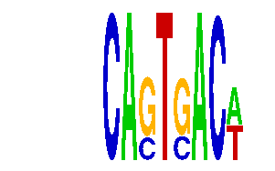

family_8 |
|---|
|  |
| Download PWM |
| Download instances (motifs) |
| Show motif distribution |
Query_ID | Query_Consensus | Subject_Name | Source_DB | Subject_ID | Length | Orientation | Offset | Divergence | Overlap | Subject_Consensus |
|---|---|---|---|---|---|---|---|---|---|---|
| family_8 | NNNCAGTGACAN | TAL1::GATA1 | JASPAR | MA0140.2 | 18 | as given | -12 | 0.319 | 6 | NTTATCTNNNNNNNNCAG |
| family_8 | NNNCAGTGACAN | YAATNANRNNNCAG | JASPAR | PF0147 | 14 | as given | -8 | 0.693 | 6 | CAATNANANNSCAG |
Sequence | Start_position (from start) | Start_position (from end) | Average conservation | Best conservation score | Instance_with_best_CS | Best_Z-score | Instance_with_best_ZS | Strand |
|---|---|---|---|---|---|---|---|---|
| chr10:74599801-74601300 | 644 | 656 | 0.0005 | 0.003 | ...CAGTSACW. | 14.195219 | ...CASTGACW. | 1 |
| chr10:5285868-5289100 | 2982 | 2994 | 0.00175 | 0.008 | ...CASTGACW. | 14.195219 | ...CASTGACW. | -1 |
| chr5:51927800-51929200 | 574 | 586 | 0.990583 | 1 | ...CAGTSACW. | 14.265004 | ...CAGTSACW. | -1 |
| chr10:126733300-126735200 | 888 | 900 | 0.0254167 | 0.034 | ...CAGTSACW. | 14.265004 | ...CAGTSACW. | 1 |
| chr1:189257700-189259500 | 1605 | 1617 | 0.0225 | 0.026 | ...CAGTSACW. | 14.195219 | ...CASTGACW. | 1 |
| chr3:39638800-39640404 | 512 | 524 | 0.0189167 | 0.043 | ...CASTGACW. | 14.195219 | ...CASTGACW. | 1 |
| chr18:11089100-11090473 | 854 | 866 | 0.298833 | 0.998 | ...CAGTSACW. | 14.265004 | ...CAGTSACW. | 1 |
| chr2:165946800-165949700 | 1706 | 1718 | 0.01275 | 0.033 | ...CAGTSACW. | 14.265004 | ...CAGTSACW. | 1 |
| chr10:74631800-74634500 | 1620 | 1632 | 0.00216667 | 0.007 | ...CASTGACW. | 14.265004 | ...CAGTSACW. | 1 |
| chr13:12427000-12428100 | 67 | 79 | 0.269833 | 0.718 | ...CASTGACW. | 14.195219 | ...CASTGACW. | -1 |
| chr1:136242341-136243900 | 594 | 606 | 0.0385833 | 0.087 | ...CAGTSACW. | 14.195219 | ...CASTGACW. | 1 |
| chr1:180646615-180648400 | 991 | 1003 | 0.00533333 | 0.011 | ...CAGTSACW. | 14.195219 | ...CASTGACW. | 1 |
| chr18:35209900-35213200 | 2205 | 2217 | 0.0015 | 0.004 | ...CASTGACW. | 14.265004 | ...CAGTSACW. | 1 |
| chr13:12287900-12289800 | 700 | 712 | 0.000916667 | 0.004 | ...CAGTSACW. | 14.195219 | ...CASTGACW. | 1 |
| chr13:12128224-12131300 | 126 | 138 | 0.999583 | 1 | ...CASTGACW. | 14.195219 | ...CASTGACW. | -1 |
| chr19:38039954-38040954 | 179 | 191 | 0.0866667 | 0.168 | ...CASTGACW. | 14.195219 | ...CASTGACW. | -1 |
| chr1:74302500-74304300 | 1153 | 1165 | 0.000583333 | 0.002 | ...CASTGACW. | 14.195219 | ...CASTGACW. | -1 |
| chr9:114932900-114934400 | 209 | 221 | 0.0135 | 0.029 | ...CASTGACW. | 14.195219 | ...CASTGACW. | -1 |
| chr15:33598200-33599584 | 575 | 587 | NA | NA | ...CASTGACW. | 14.265004 | ...CAGTSACW. | 1 |
| chr4:8752600-8753848 | 251 | 263 | 0.00575 | 0.014 | ...CASTGACW. | 14.195219 | ...CASTGACW. | 1 |
| chr6:141116048-141117400 | 105 | 117 | 0.0005 | 0.002 | ...CAGTSACW. | 14.195219 | ...CASTGACW. | 1 |
| chr5:92009500-92011931 | 383 | 395 | 0.00225 | 0.01 | ...CAGTSACW. | 14.195219 | ...CASTGACW. | 1 |
| chr1:129485400-129486700 | 664 | 676 | 0.00291667 | 0.009 | ...CAGTSACW. | 14.195219 | ...CASTGACW. | -1 |
| chr12:77559300-77560600 | 168 | 180 | 0.000416667 | 0.003 | ...CASTGACW. | 14.265004 | ...CAGTSACW. | 1 |
| chr6:97215081-97217900 | 813 | 825 | 0.00533333 | 0.021 | ...CASTGACW. | 14.195219 | ...CASTGACW. | -1 |
| chr16:26081328-26083314 | 824 | 836 | 0.00133333 | 0.007 | ...CASTGACW. | 14.265004 | ...CAGTSACW. | 1 |
| chr10:116617400-116618700 | 1016 | 1028 | 0.0435833 | 0.081 | ...CASTGACW. | 14.195219 | ...CASTGACW. | 1 |
| chr17:85803500-85806600 | 1974 | 1986 | 0.004 | 0.01 | ...CAGTSACW. | 14.195219 | ...CASTGACW. | -1 |
| chr17:63071600-63073300 | 1434 | 1446 | 0.27225 | 0.657 | CTKCAGTGAYTT | 13.9379015 | CTKCAGTGAMTT | -1 |
| chr6:90910300-90911883 | 766 | 778 | 0.004 | 0.007 | ...CAGTSACW. | 14.265004 | ...CAGTSACW. | 1 |
| chr2:49926100-49928200 | 893 | 905 | 0.0168333 | 0.035 | ...CAGTSACW. | 14.195219 | ...CASTGACW. | -1 |
| chr12:33942700-33946400 | 1002 | 1014 | 0.0095 | 0.019 | ...CASTGACW. | 14.265004 | ...CAGTSACW. | 1 |
| chr11:74569689-74570900 | 640 | 652 | 0.27775 | 0.939 | ...CAGTSACW. | 14.265004 | ...CAGTSACW. | -1 |
| chr13:46906580-46908900 | 1724 | 1736 | 0.103333 | 0.981 | ...CAGTSACW. | 14.195219 | ...CASTGACW. | -1 |
| chr12:108883149-108884900 | 335 | 347 | 0.00408333 | 0.009 | ...CAGTSACW. | 14.195219 | ...CASTGACW. | 1 |
| chr16:43431600-43432783 | 723 | 735 | 0.000416667 | 0.002 | ...CASTGACW. | 14.195219 | ...CASTGACW. | 1 |
| chr12:83095700-83097400 | 1603 | 1615 | 0.9175 | 0.998 | ...CASTGACW. | 14.265004 | ...CAGTSACW. | -1 |
| chr11:74246308-74247500 | 524 | 536 | 0.000916667 | 0.002 | ...CASTGACW. | 14.195219 | ...CASTGACW. | 1 |
| chr17:27009000-27012400 | 660 | 672 | 0.00233333 | 0.005 | ...CASTGACW. | 14.265004 | ...CAGTSACW. | 1 |
| chr12:74966100-74967339 | 428 | 440 | 0.00425 | 0.018 | ...CASTGACW. | 14.195219 | ...CASTGACW. | -1 |
| chr5:130039200-130041800 | 2415 | 2427 | 0.00466667 | 0.019 | ...CASTGACW. | 14.195219 | ...CASTGACW. | -1 |
| chr12:74691500-74692886 | 736 | 748 | 0.0326667 | 0.082 | ...CASTGACW. | 14.265004 | ...CAGTSACW. | 1 |
| chr2:3502017-3503017 | 558 | 570 | 0.14975 | 0.243 | ...CASTGACW. | 14.195219 | ...CASTGACW. | -1 |
| chr3:40322698-40324672 | 296 | 308 | 0.000166667 | 0.001 | ...CASTGACW. | 14.195219 | ...CASTGACW. | 1 |
| chr3:38153300-38154783 | 1266 | 1278 | 0.0576667 | 0.119 | ...CASTGACW. | 14.265004 | ...CAGTSACW. | -1 |
| chr10:120197400-120198568 | 648 | 660 | 0.00133333 | 0.007 | ...CASTGACW. | 14.195219 | ...CASTGACW. | 1 |
| chr4:42970200-42974000 | 2294 | 2306 | 0 | 0 | ...CASTGACW. | 14.265004 | ...CAGTSACW. | 1 |
| chr5:107484315-107485800 | 387 | 399 | 0.00266667 | 0.006 | ...CASTGACW. | 14.195219 | ...CASTGACW. | 1 |
| chr1:23121800-23123300 | 540 | 552 | 0.00283333 | 0.005 | ...CAGTSACW. | 14.195219 | ...CASTGACW. | 1 |
| chr6:30193200-30194260 | 604 | 616 | 0.00325 | 0.01 | ...CAGTSACW. | 14.195219 | ...CASTGACW. | 1 |
| chr16:94979356-94981100 | 1565 | 1577 | 0.00891667 | 0.035 | ...CAGTSACW. | 14.195219 | ...CASTGACW. | 1 |
| chr18:44890113-44891113 | 233 | 245 | 0.00233333 | 0.006 | ...CAGTSACW. | 14.195219 | ...CASTGACW. | 1 |
| chr1:36248300-36249764 | 1101 | 1113 | 0.00141667 | 0.006 | ...CASTGACW. | 14.195219 | ...CASTGACW. | -1 |
| chr11:30163300-30164899 | 24 | 36 | 0.000666667 | 0.002 | ...CAGTSACW. | 14.265004 | ...CAGTSACW. | 1 |
| chr10:7799205-7800205 | 971 | 983 | 0.0409167 | 0.047 | ...CASTGACW. | 14.265004 | ...CAGTSACW. | -1 |
| chr9:32033967-32034967 | 654 | 666 | 0.01 | 0.021 | CTKCAGTGAYTT | 14.270282 | CTKCAGTGAYTT | -1 |
| chr9:23200159-23201300 | 854 | 866 | 0.747167 | 0.929 | ...CAGTSACW. | 14.265004 | ...CAGTSACW. | 1 |
| chr16:16542863-16543863 | 704 | 716 | 0.00391667 | 0.014 | ...CAGTSACW. | 14.265004 | ...CAGTSACW. | 1 |
| chr11:11918100-11919231 | 919 | 931 | 0.00266667 | 0.006 | ...CAGTSACW. | 14.195219 | ...CASTGACW. | -1 |
| chr15:79866800-79868500 | 87 | 99 | 0.00191667 | 0.004 | ...CAGTSACW. | 14.195219 | ...CASTGACW. | 1 |
| chr12:71902100-71903300 | 386 | 398 | 0.00183333 | 0.005 | ...CASTGACW. | 14.265004 | ...CAGTSACW. | 1 |
| chr6:93447113-93448113 | 959 | 971 | 0.008 | 0.016 | ...CASTGACW. | 14.195219 | ...CASTGACW. | 1 |
| chr13:81241275-81243640 | 1928 | 1940 | 0.00583333 | 0.031 | ...CASTGACW. | 14.195219 | ...CASTGACW. | 1 |
| chr4:137743300-137745100 | 891 | 903 | 0.489583 | 0.693 | ...CASTGACW. | 14.265004 | ...CAGTSACW. | -1 |
| chr3:146538100-146539204 | 247 | 259 | 0.01 | 0.028 | ...CAGTSACW. | 14.195219 | ...CASTGACW. | 1 |
| chr1:136742494-136744800 | 1583 | 1595 | 0.115667 | 0.277 | ...CASTGACW. | 14.195219 | ...CASTGACW. | 1 |
| chr4:123487100-123488600 | 484 | 496 | 0.02775 | 0.062 | ...CASTGACW. | 14.195219 | ...CASTGACW. | -1 |
| chr7:37742700-37744139 | 1269 | 1281 | 0.000166667 | 0.001 | ...CAGTSACW. | 14.265004 | ...CAGTSACW. | 1 |
| chr6:94839100-94843100 | 2042 | 2054 | 8.33333e-05 | 0.001 | ...CASTGACW. | 14.195219 | ...CASTGACW. | -1 |
| chr6:53456300-53460300 | 293 | 305 | 0.0191667 | 0.092 | ...CASTGACW. | 14.195219 | ...CASTGACW. | 1 |
| chr5:130276300-130277311 | 477 | 489 | 0 | 0 | ...CASTGACW. | 14.195219 | ...CASTGACW. | 1 |
| chr8:117358136-117359600 | 1265 | 1277 | 0.0005 | 0.002 | ...CASTGACW. | 14.265004 | ...CAGTSACW. | -1 |
| chr14:63879243-63880600 | 289 | 301 | 0.000916667 | 0.003 | CTKCAGTGAMTT | 13.9379015 | CTKCAGTGAMTT | -1 |
| chr15:100004910-100006300 | 46 | 58 | 0.907 | 1 | ...CASTGACW. | 14.195219 | ...CASTGACW. | 1 |
| chr16:5433000-5435300 | 238 | 250 | 0.0015 | 0.007 | ...CASTGACW. | 14.195219 | ...CASTGACW. | 1 |
| chr8:47498400-47501400 | 2847 | 2859 | 0.0144167 | 0.022 | ...CASTGACW. | 14.195219 | ...CASTGACW. | 1 |
| chr5:72771747-72773200 | 1042 | 1054 | 0.05325 | 0.164 | ...CASTGACW. | 14.265004 | ...CAGTSACW. | 1 |
| chr15:27669300-27670863 | 1086 | 1098 | 0.974833 | 1 | ...CASTGACW. | 14.195219 | ...CASTGACW. | -1 |
| chr15:100008100-100009465 | 777 | 789 | 0.990667 | 1 | ...CAGTSACW. | 14.195219 | ...CASTGACW. | 1 |
| chr6:32587132-32588132 | 28 | 40 | 0.000916667 | 0.005 | ...CASTGACW. | 14.195219 | ...CASTGACW. | -1 |
| chr1:129361656-129362700 | 437 | 449 | 0.00816667 | 0.019 | ...CAGTSACW. | 14.265004 | ...CAGTSACW. | 1 |
| chr8:70466249-70467249 | 392 | 404 | 0.000916667 | 0.006 | ...CAGTSACW. | 14.195219 | ...CASTGACW. | 1 |
| chr12:12187297-12188800 | 1443 | 1455 | 0.03375 | 0.054 | ...CASTGACW. | 14.195219 | ...CASTGACW. | -1 |
| chr13:6024200-6026100 | 1255 | 1267 | NA | NA | ...CASTGACW. | 14.195219 | ...CASTGACW. | 1 |
| chr15:80745909-80747200 | 461 | 473 | 0.406 | 0.991 | ...CASTGACW. | 14.265004 | ...CAGTSACW. | 1 |
| chr16:90340873-90342000 | 688 | 700 | 0.00766667 | 0.016 | ...CAGTSACW. | 14.265004 | ...CAGTSACW. | 1 |
| chr11:21460935-21462500 | 202 | 214 | 0.0204167 | 0.031 | ...CASTGACW. | 14.195219 | ...CASTGACW. | -1 |
| chr8:64399000-64401110 | 1494 | 1506 | 0.0724167 | 0.205 | ...CAGTSACW. | 14.265004 | ...CAGTSACW. | 1 |
| chrX:156380730-156381730 | 627 | 639 | 0.00641667 | 0.028 | ...CASTGACW. | 14.265004 | ...CAGTSACW. | -1 |
| chr19:6384905-6387600 | 2657 | 2669 | 0.00116667 | 0.004 | ...CASTGACW. | 14.195219 | ...CASTGACW. | 1 |
| chr1:193367353-193368353 | 258 | 270 | 0.000833333 | 0.002 | ...CASTGACW. | 14.195219 | ...CASTGACW. | 1 |
| chr15:99986403-99988500 | 417 | 429 | 0.0794167 | 0.095 | ...CAGTSACW. | 14.265004 | ...CAGTSACW. | -1 |
| chr2:35849200-35850900 | 446 | 458 | 0.000666667 | 0.003 | ...CAGTSACW. | 14.195219 | ...CASTGACW. | 1 |
| chrX:11346604-11348200 | 569 | 581 | 8.33333e-05 | 0.001 | ...CAGTSACW. | 14.195219 | ...CASTGACW. | 1 |
| chr13:105435623-105437000 | 498 | 510 | 0.006 | 0.026 | ...CAGTSACW. | 14.265004 | ...CAGTSACW. | 1 |
| chr5:93335900-93338500 | 433 | 445 | 0.02725 | 0.033 | ...CASTGACW. | 14.195219 | ...CASTGACW. | -1 |
| chr11:21462943-21465606 | 855 | 867 | 0.000333333 | 0.001 | ...CASTGACW. | 14.265004 | ...CAGTSACW. | 1 |
| chr7:87898100-87899602 | 549 | 561 | 0.98925 | 0.994 | ...CAGTSACW. | 14.265004 | ...CAGTSACW. | -1 |
| chr2:73506056-73507300 | 895 | 907 | 0.00783333 | 0.018 | ...CASTGACW. | 14.195219 | ...CASTGACW. | 1 |
| chr6:8360061-8361200 | 1106 | 1118 | 0.141417 | 0.163 | ...CAGTSACW. | 14.265004 | ...CAGTSACW. | 1 |
| chr9:89842300-89844123 | 1426 | 1438 | 0.00891667 | 0.033 | ...CAGTSACW. | 14.195219 | ...CASTGACW. | 1 |
| chr12:72920544-72922400 | 684 | 696 | 0.000833333 | 0.003 | ...CASTGACW. | 14.265004 | ...CAGTSACW. | 1 |
| chr17:81179308-81180308 | 548 | 560 | 0.00075 | 0.004 | ...CAGTSACW. | 14.265004 | ...CAGTSACW. | 1 |
| chr3:101313410-101314410 | 965 | 977 | 0.000666667 | 0.003 | ...CAGTSACW. | 14.265004 | ...CAGTSACW. | 1 |
| chr2:129696200-129698600 | 335 | 347 | 0.00175 | 0.004 | ...CASTGACW. | 14.195219 | ...CASTGACW. | 1 |
| chr2:102143300-102144800 | 490 | 502 | 0.00683333 | 0.019 | ...CASTGACW. | 14.265004 | ...CAGTSACW. | 1 |
| chr1:45076847-45078683 | 828 | 840 | 0.0689167 | 0.137 | ...CAGTSACW. | 14.265004 | ...CAGTSACW. | 1 |
| chr6:127512700-127514584 | 1379 | 1391 | 0.244 | 0.305 | ...CAGTSACW. | 14.195219 | ...CASTGACW. | 1 |
| chr1:51161235-51162235 | 171 | 183 | 0.00458333 | 0.02 | ...CAGTSACW. | 14.265004 | ...CAGTSACW. | 1 |
| chr14:47507600-47509700 | 549 | 561 | 0.00275 | 0.012 | ...CAGTSACW. | 14.265004 | ...CAGTSACW. | -1 |
| chr19:28350700-28352109 | 308 | 320 | 0.001 | 0.004 | ...CASTGACW. | 14.195219 | ...CASTGACW. | 1 |
| chr1:43293900-43297200 | 751 | 763 | 0.0015 | 0.006 | ...CAGTSACW. | 14.265004 | ...CAGTSACW. | 1 |
| chr4:55466710-55468100 | 286 | 298 | 0.451333 | 0.897 | ...CASTGACW. | 14.265004 | ...CAGTSACW. | 1 |
| chr17:75715000-75717494 | 2435 | 2447 | 0.000833333 | 0.004 | ...CAGTSACW. | 14.265004 | ...CAGTSACW. | -1 |
| chr7:56094100-56096800 | 339 | 351 | 0.222583 | 0.553 | ...CASTGACW. | 14.195219 | ...CASTGACW. | 1 |
| chr10:57864000-57865500 | 172 | 184 | 0.0368333 | 0.054 | ...CAGTSACW. | 14.265004 | ...CAGTSACW. | 1 |
| chr12:73107900-73110855 | 2722 | 2734 | 0.01475 | 0.022 | ...CAGTSACW. | 14.195219 | ...CASTGACW. | -1 |
| chr18:5073600-5077590 | 138 | 150 | 0.000916667 | 0.003 | ...CAGTSACW. | 14.265004 | ...CAGTSACW. | -1 |
| chr16:22839349-22840700 | 99 | 111 | 0.00166667 | 0.003 | ...CASTGACW. | 14.265004 | ...CAGTSACW. | -1 |
| chr4:102004600-102007186 | 2133 | 2145 | 0.0353333 | 0.042 | ...CASTGACW. | 14.195219 | ...CASTGACW. | -1 |
| chr13:12119812-12125100 | 3871 | 3883 | 0.0258333 | 0.094 | ...CASTGACW. | 14.195219 | ...CASTGACW. | 1 |
| chr8:14898300-14900237 | 1261 | 1273 | NA | NA | ...CAGTSACW. | 14.265004 | ...CAGTSACW. | -1 |
| chr17:69517668-69519700 | 1141 | 1153 | 0.0005 | 0.004 | ...CAGTSACW. | 14.195219 | ...CASTGACW. | -1 |
| chrX:163147300-163148390 | 435 | 447 | 0.0985 | 0.166 | ...CASTGACW. | 14.195219 | ...CASTGACW. | -1 |
| chr10:62590500-62591582 | 677 | 689 | 0.331417 | 0.939 | ...CAGTSACW. | 14.195219 | ...CASTGACW. | 1 |
| chr6:90814193-90815500 | 1219 | 1231 | 0.0336667 | 0.073 | ...CASTGACW. | 14.265004 | ...CAGTSACW. | -1 |
| chr12:118901346-118902600 | 415 | 427 | 0 | 0 | ...CAGTSACW. | 14.195219 | ...CASTGACW. | -1 |
| chr13:72507000-72509800 | 1308 | 1320 | 0.00525 | 0.019 | ...CAGTSACW. | 14.265004 | ...CAGTSACW. | 1 |
| chr14:120634500-120635700 | 1041 | 1053 | 0.000833333 | 0.002 | ...CAGTSACW. | 14.195219 | ...CASTGACW. | -1 |
| chr10:74718717-74719717 | 395 | 407 | 0.00533333 | 0.008 | ...CASTGACW. | 14.195219 | ...CASTGACW. | 1 |
| chr1:76977108-76978108 | 426 | 438 | 0.00166667 | 0.004 | ...CASTGACW. | 14.265004 | ...CAGTSACW. | -1 |
| chr1:41190100-41191700 | 670 | 682 | 0.00191667 | 0.006 | ...CAGTSACW. | 14.265004 | ...CAGTSACW. | -1 |
| chr9:28832471-28833471 | 564 | 576 | 0.00025 | 0.001 | ...CASTGACW. | 14.195219 | ...CASTGACW. | 1 |
| chr1:136830500-136832300 | 786 | 798 | 0.0175 | 0.06 | ...CAGTSACW. | 14.195219 | ...CASTGACW. | -1 |
| chr9:76866400-76867645 | 455 | 467 | 0.000166667 | 0.001 | ...CAGTSACW. | 14.265004 | ...CAGTSACW. | 1 |
| chr15:58113700-58116100 | 1179 | 1191 | 0.00175 | 0.004 | ...CASTGACW. | 14.195219 | ...CASTGACW. | 1 |
| chr9:24554457-24556500 | 305 | 317 | 1 | 1 | ...CASTGACW. | 14.195219 | ...CASTGACW. | -1 |
| chr3:51296700-51298200 | 1469 | 1481 | 0.00233333 | 0.005 | ...CAGTSACW. | 14.265004 | ...CAGTSACW. | 1 |
| chr9:24564731-24566100 | 951 | 963 | 0.001 | 0.004 | ...CASTGACW. | 14.195219 | ...CASTGACW. | 1 |
| chr12:77217805-77220000 | 321 | 333 | 0.0111667 | 0.03 | ...CAGTSACW. | 14.265004 | ...CAGTSACW. | -1 |
| chr12:33823346-33824900 | 221 | 233 | 0.00141667 | 0.004 | ...CAGTSACW. | 14.265004 | ...CAGTSACW. | -1 |
| chr16:4516532-4517600 | 479 | 491 | 0.0575 | 0.107 | ...CAGTSACW. | 14.265004 | ...CAGTSACW. | 1 |
| chr7:87913030-87914844 | 590 | 602 | 0.00625 | 0.014 | ...CAGTSACW. | 14.195219 | ...CASTGACW. | -1 |
| chr2:13970083-13971083 | 893 | 905 | 0.00308333 | 0.008 | ...CAGTSACW. | 14.265004 | ...CAGTSACW. | 1 |
| chr18:56580800-56582600 | 1762 | 1774 | 0.0249167 | 0.054 | ...CAGTSACW. | 14.265004 | ...CAGTSACW. | 1 |
| chr8:11818900-11824100 | 1378 | 1390 | 0.01075 | 0.023 | ...CASTGACW. | 14.195219 | ...CASTGACW. | 1 |
| chr18:68334300-68335900 | 84 | 96 | 0.0403333 | 0.086 | ...CASTGACW. | 14.195219 | ...CASTGACW. | 1 |
| chr12:41166900-41168400 | 251 | 263 | 0.08025 | 0.212 | ...CASTGACW. | 14.195219 | ...CASTGACW. | 1 |
| chr17:87111053-87112500 | 177 | 189 | 0.871417 | 0.99 | ...CAGTSACW. | 14.265004 | ...CAGTSACW. | -1 |
| chr18:83227000-83228881 | 490 | 502 | 0.0986667 | 0.184 | ...CASTGACW. | 14.265004 | ...CAGTSACW. | 1 |
| chr14:105801700-105803584 | 1693 | 1705 | 0.0125 | 0.071 | ...CASTGACW. | 14.195219 | ...CASTGACW. | -1 |
| chr1:129226000-129228000 | 346 | 358 | NA | NA | ...CASTGACW. | 14.195219 | ...CASTGACW. | -1 |
| chr13:46890800-46892400 | 1132 | 1144 | 0.00383333 | 0.007 | ...CAGTSACW. | 14.265004 | ...CAGTSACW. | 1 |
| chr17:85486206-85487400 | 1023 | 1035 | 0.00633333 | 0.063 | ...CAGTSACW. | 14.265004 | ...CAGTSACW. | 1 |
| chr9:24772900-24774281 | 1302 | 1314 | 0.00191667 | 0.007 | ...CAGTSACW. | 14.265004 | ...CAGTSACW. | -1 |
| chr18:68334300-68335900 | 83 | 95 | 0.0480833 | 0.109 | ...CAGTSACW. | 14.265004 | ...CAGTSACW. | -1 |
| chr15:100028400-100031200 | 1907 | 1919 | 0.29275 | 0.783 | ...CAGTSACW. | 14.195219 | ...CASTGACW. | 1 |
| chr17:63106000-63107200 | 318 | 330 | 0.00366667 | 0.021 | ...CASTGACW. | 14.265004 | ...CAGTSACW. | 1 |
| chr12:12289900-12292300 | 1730 | 1742 | 0.00166667 | 0.009 | ...CASTGACW. | 14.195219 | ...CASTGACW. | -1 |
| chr11:21460935-21462500 | 199 | 211 | 0.0164167 | 0.031 | ...CAGTSACW. | 14.265004 | ...CAGTSACW. | 1 |
| chr5:93356681-93358377 | 523 | 535 | 0.5995 | 0.622 | ...CAGTSACW. | 14.265004 | ...CAGTSACW. | -1 |
| chr16:26060270-26061270 | 273 | 285 | 0.00075 | 0.003 | ...CAGTSACW. | 14.265004 | ...CAGTSACW. | -1 |
| chr11:35154000-35155221 | 527 | 539 | 0.00575 | 0.011 | ...CASTGACW. | 14.265004 | ...CAGTSACW. | -1 |
| chr17:63815730-63817200 | 560 | 572 | 0.0203333 | 0.037 | ...CAGTSACW. | 14.265004 | ...CAGTSACW. | 1 |
| chr11:21460935-21462500 | 1508 | 1520 | 0.00108333 | 0.003 | CTKCAGTGAMTT | 13.9379015 | CTKCAGTGAMTT | -1 |
| chr19:48541766-48542766 | 818 | 830 | 0.00216667 | 0.009 | ...CASTGACW. | 14.195219 | ...CASTGACW. | -1 |
| chr1:43293900-43297200 | 1062 | 1074 | 0.00133333 | 0.008 | ...CASTGACW. | 14.195219 | ...CASTGACW. | 1 |
| chr1:120404418-120405700 | 272 | 284 | 0.0114167 | 0.028 | ...CASTGACW. | 14.195219 | ...CASTGACW. | -1 |
| chr13:46995600-46996955 | 786 | 798 | 0.00258333 | 0.008 | ...CAGTSACW. | 14.265004 | ...CAGTSACW. | 1 |
| chr4:53988500-53990300 | 887 | 899 | 0.999917 | 1 | ...CAGTSACW. | 14.195219 | ...CASTGACW. | 1 |
| chr1:156981100-156985200 | 1416 | 1428 | 0.00175 | 0.003 | ...CASTGACW. | 14.195219 | ...CASTGACW. | 1 |
| chr10:83488886-83490500 | 747 | 759 | 0.00608333 | 0.017 | ...CAGTSACW. | 14.195219 | ...CASTGACW. | 1 |
| chr3:97041200-97042700 | 351 | 363 | 0.012 | 0.032 | ...CAGTSACW. | 14.265004 | ...CAGTSACW. | -1 |
| chr10:8372300-8373900 | 515 | 527 | 0.00166667 | 0.004 | ...CASTGACW. | 14.195219 | ...CASTGACW. | 1 |
| chr10:13351000-13352180 | 618 | 630 | 0.00283333 | 0.006 | ...CASTGACW. | 14.195219 | ...CASTGACW. | -1 |
| chr5:31864700-31868100 | 1714 | 1726 | 0.0989167 | 0.325 | ...CAGTSACW. | 14.265004 | ...CAGTSACW. | 1 |
| chr15:11808002-11809002 | 282 | 294 | 0.99725 | 1 | ...CAGTSACW. | 14.195219 | ...CASTGACW. | -1 |
| chr16:59589800-59591600 | 843 | 855 | 0.0193333 | 0.048 | ...CAGTSACW. | 14.195219 | ...CASTGACW. | 1 |
| chr7:144043045-144044900 | 1284 | 1296 | 0.000416667 | 0.002 | ...CASTGACW. | 14.195219 | ...CASTGACW. | 1 |
| chr2:76964458-76965458 | 773 | 785 | 0.0244167 | 0.04 | ...CASTGACW. | 14.265004 | ...CAGTSACW. | 1 |
| chr1:166817425-166818425 | 395 | 407 | 0.000916667 | 0.003 | ...CAGTSACW. | 14.265004 | ...CAGTSACW. | 1 |
| chr18:65487600-65489419 | 1425 | 1437 | 0.000583333 | 0.002 | ...CASTGACW. | 14.195219 | ...CASTGACW. | -1 |
| chr8:64373826-64374826 | 844 | 856 | 0.0109167 | 0.034 | ...CASTGACW. | 14.195219 | ...CASTGACW. | 1 |
| chr13:110412348-110413900 | 889 | 901 | 0.0065 | 0.022 | ...CASTGACW. | 14.265004 | ...CAGTSACW. | 1 |
| chr8:42084177-42086300 | 853 | 865 | 0.912167 | 1 | ...CAGTSACW. | 14.195219 | ...CASTGACW. | 1 |
| chr8:64386834-64387834 | 420 | 432 | 0.00508333 | 0.01 | ...CAGTSACW. | 14.195219 | ...CASTGACW. | -1 |
| chr15:27168300-27169300 | 650 | 662 | 0.00125 | 0.003 | CTKCARTGACTT | 15.773485 | CTKCARTGACTT | -1 |
| chr4:32086400-32088019 | 2 | 14 | 0.01575 | 0.039 | ...CAGTSACW. | 14.195219 | ...CASTGACW. | 1 |
| chr1:133125276-133128123 | 1472 | 1484 | 0.00575 | 0.016 | ...CASTGACW. | 14.195219 | ...CASTGACW. | 1 |
| chr1:40860200-40863300 | 458 | 470 | 0.00925 | 0.028 | ...CASTGACW. | 14.265004 | ...CAGTSACW. | 1 |
| chr5:149062900-149066000 | 2280 | 2292 | 0.00491667 | 0.017 | ...CASTGACW. | 14.265004 | ...CAGTSACW. | 1 |
| chr13:30008286-30009700 | 517 | 529 | 0.90925 | 1 | ...CAGTSACW. | 14.265004 | ...CAGTSACW. | 1 |
| chr2:113461500-113463300 | 1606 | 1618 | 0.0005 | 0.001 | ...CAGTSACW. | 14.195219 | ...CASTGACW. | 1 |
| chr15:76946500-76948697 | 736 | 748 | 0.001 | 0.004 | ...CAGTSACW. | 14.195219 | ...CASTGACW. | 1 |
| chr1:189833400-189835595 | 1189 | 1201 | 0.000666667 | 0.006 | ...CAGTSACW. | 14.265004 | ...CAGTSACW. | 1 |
| chr9:24552858-24553858 | 760 | 772 | 8.33333e-05 | 0.001 | ...CASTGACW. | 14.265004 | ...CAGTSACW. | -1 |
| chr13:74499900-74502000 | 505 | 517 | 0.00808333 | 0.016 | ...CASTGACW. | 14.265004 | ...CAGTSACW. | 1 |
| chr17:75715000-75717494 | 2436 | 2448 | 0.000583333 | 0.002 | ...CASTGACW. | 14.195219 | ...CASTGACW. | 1 |
| chr10:52896500-52897547 | 255 | 267 | 0.00441667 | 0.02 | ...CAGTSACW. | 14.195219 | ...CASTGACW. | 1 |
| chr12:77082700-77085300 | 1519 | 1531 | 0.111 | 0.462 | ...CAGTSACW. | 14.265004 | ...CAGTSACW. | 1 |
| chr2:77019700-77021600 | 745 | 757 | 0.0005 | 0.002 | ...CASTGACW. | 14.195219 | ...CASTGACW. | -1 |
| chr14:61124870-61125870 | 629 | 641 | 0.00383333 | 0.016 | ...CAGTSACW. | 14.195219 | ...CASTGACW. | 1 |
| chr6:93933483-93934483 | 180 | 192 | 0.00075 | 0.002 | ...CAGTSACW. | 14.265004 | ...CAGTSACW. | 1 |
| chr1:189697200-189698500 | 101 | 113 | 0.875583 | 0.988 | ...CAGTSACW. | 14.195219 | ...CASTGACW. | 1 |
| chr8:109237400-109239100 | 381 | 393 | 0.0153333 | 0.023 | ...CAGTSACW. | 14.265004 | ...CAGTSACW. | -1 |
| chr18:11069468-11071294 | 1769 | 1781 | 0.034 | 0.063 | ...CASTGACW. | 14.265004 | ...CAGTSACW. | 1 |
| chr14:47696283-47699500 | 2095 | 2107 | 0.0164167 | 0.077 | ...CAGTSACW. | 14.195219 | ...CASTGACW. | 1 |
| chr2:146810800-146812700 | 1769 | 1781 | 0.00883333 | 0.019 | ...CAGTSACW. | 14.195219 | ...CASTGACW. | -1 |
| chr1:92931200-92933040 | 1347 | 1359 | 0.0005 | 0.002 | ...CAGTSACW. | 14.195219 | ...CASTGACW. | 1 |
| chr6:32303715-32305100 | 323 | 335 | 0.00316667 | 0.021 | ...CASTGACW. | 14.265004 | ...CAGTSACW. | 1 |
| chr6:119130600-119133300 | 620 | 632 | 0.00383333 | 0.011 | ...CASTGACW. | 14.265004 | ...CAGTSACW. | 1 |
| chr18:5446400-5447710 | 966 | 978 | 0.00216667 | 0.006 | ...CASTGACW. | 14.195219 | ...CASTGACW. | -1 |
| chr2:148428600-148430135 | 61 | 73 | 0.0375 | 0.049 | ...CASTGACW. | 14.195219 | ...CASTGACW. | -1 |
| chr10:62923000-62924600 | 1134 | 1146 | 0.00466667 | 0.01 | ...CASTGACW. | 14.195219 | ...CASTGACW. | 1 |
| chr6:32497208-32498208 | 312 | 324 | 0.000416667 | 0.003 | ...CAGTSACW. | 14.265004 | ...CAGTSACW. | 1 |
| chr8:110521900-110523600 | 940 | 952 | 0.00683333 | 0.013 | ...CASTGACW. | 14.195219 | ...CASTGACW. | 1 |
| chr4:83546800-83548339 | 1491 | 1503 | 0.0444167 | 0.086 | ...CAGTSACW. | 14.195219 | ...CASTGACW. | 1 |
| chr15:76936826-76938578 | 1762 | 1774 | 0.000666667 | 0.002 | ...CASTGACW. | 14.265004 | ...CAGTSACW. | 1 |
| chr1:62038479-62039500 | 384 | 396 | 0.031 | 0.081 | ...CASTGACW. | 14.265004 | ...CAGTSACW. | 1 |
| chr13:12409200-12411000 | 1166 | 1178 | 0.000166667 | 0.001 | ...CAGTSACW. | 14.265004 | ...CAGTSACW. | 1 |
| chr3:95816000-95818200 | 1326 | 1338 | 0.0329167 | 0.056 | ...CAGTSACW. | 14.195219 | ...CASTGACW. | -1 |
| chr6:92931418-92932900 | 1234 | 1246 | 0.343583 | 0.669 | ...CAGTSACW. | 14.265004 | ...CAGTSACW. | -1 |
| chr13:73214439-73216200 | 1071 | 1083 | 0.01875 | 0.023 | ...CAGTSACW. | 14.195219 | ...CASTGACW. | 1 |
| chr15:11519600-11520606 | 169 | 181 | 0.0636667 | 0.078 | ...CAGTSACW. | 14.195219 | ...CASTGACW. | 1 |
| chr13:45717600-45719300 | 565 | 577 | 0.00766667 | 0.045 | ...CASTGACW. | 14.265004 | ...CAGTSACW. | 1 |
| chr4:147339344-147342300 | 460 | 472 | 8.33333e-05 | 0.001 | ...CAGTSACW. | 14.195219 | ...CASTGACW. | 1 |
| chr8:119716200-119719130 | 1948 | 1960 | 0.999833 | 1 | ...CASTGACW. | 14.195219 | ...CASTGACW. | -1 |
| chr3:87926800-87928079 | 903 | 915 | 0.04175 | 0.071 | ...CASTGACW. | 14.195219 | ...CASTGACW. | -1 |
| chr8:11806700-11807900 | 822 | 834 | 0.00175 | 0.008 | ...CAGTSACW. | 14.195219 | ...CASTGACW. | 1 |
| chr14:102193534-102195300 | 317 | 329 | 0.00141667 | 0.007 | ...CAGTSACW. | 14.265004 | ...CAGTSACW. | -1 |
| chr8:46972802-46974502 | 225 | 237 | 0.0055 | 0.01 | ...CAGTSACW. | 14.195219 | ...CASTGACW. | 1 |
| chr17:71344800-71347124 | 1589 | 1601 | 0.017 | 0.088 | ...CAGTSACW. | 14.265004 | ...CAGTSACW. | 1 |
| chr10:20200820-20202200 | 1370 | 1382 | 0.00991667 | 0.021 | ...CAGTSACW. | 14.265004 | ...CAGTSACW. | -1 |
| chr9:29258000-29259800 | 96 | 108 | 0.714833 | 0.921 | ...CASTGACW. | 14.195219 | ...CASTGACW. | 1 |
| chr6:90785123-90786700 | 463 | 475 | 0.00408333 | 0.01 | ...CAGTSACW. | 14.195219 | ...CASTGACW. | 1 |
| chr1:30880862-30882500 | 249 | 261 | 0.00866667 | 0.02 | ...CAGTSACW. | 14.195219 | ...CASTGACW. | 1 |
| chrX:163332624-163334000 | 373 | 385 | 0.00325 | 0.006 | ...CASTGACW. | 14.195219 | ...CASTGACW. | 1 |
| chr9:79993300-79994900 | 897 | 909 | 0.00816667 | 0.023 | ...CAGTSACW. | 14.265004 | ...CAGTSACW. | -1 |
| chr1:167585000-167586534 | 202 | 214 | 0.00608333 | 0.012 | ...CASTGACW. | 14.265004 | ...CAGTSACW. | -1 |
| chr10:63064095-63065095 | 48 | 60 | 0.000583333 | 0.003 | ...CAGTSACW. | 14.265004 | ...CAGTSACW. | 1 |
| chr2:180126900-180134700 | 6918 | 6930 | 0.00358333 | 0.006 | ...CASTGACW. | 14.195219 | ...CASTGACW. | 1 |
| chr5:93335900-93338500 | 554 | 566 | 0.07925 | 0.167 | ...CAGTSACW. | 14.265004 | ...CAGTSACW. | 1 |
| chr3:137659400-137661200 | 715 | 727 | 0.00133333 | 0.006 | ...CAGTSACW. | 14.195219 | ...CASTGACW. | 1 |
| chr4:123487100-123488600 | 481 | 493 | 0.0253333 | 0.062 | ...CAGTSACW. | 14.265004 | ...CAGTSACW. | 1 |
| chr10:20287750-20289364 | 398 | 410 | 0 | 0 | ...CAGTSACW. | 14.195219 | ...CASTGACW. | 1 |
| chr5:76036594-76037594 | 504 | 516 | 0.0025 | 0.014 | ...CASTGACW. | 14.195219 | ...CASTGACW. | 1 |
| chr5:92005401-92008500 | 989 | 1001 | 0.00491667 | 0.011 | ...CASTGACW. | 14.195219 | ...CASTGACW. | 1 |
| chr1:40239815-40241400 | 589 | 601 | 0.179 | 0.197 | ...CASTGACW. | 14.195219 | ...CASTGACW. | -1 |
| chr10:62934861-62935861 | 495 | 507 | 0.0309167 | 0.11 | ...CASTGACW. | 14.195219 | ...CASTGACW. | 1 |
| chr6:83977800-83979186 | 471 | 483 | 0.29325 | 0.562 | ...CAGTSACW. | 14.265004 | ...CAGTSACW. | 1 |
| chr12:12422600-12424211 | 221 | 233 | 0.00775 | 0.022 | ...CAGTSACW. | 14.265004 | ...CAGTSACW. | 1 |
| chr10:42177013-42178100 | 430 | 442 | 0.0596667 | 0.118 | ...CASTGACW. | 14.195219 | ...CASTGACW. | 1 |
| chr4:76103860-76105400 | 193 | 205 | 0.326083 | 0.645 | ...CASTGACW. | 14.195219 | ...CASTGACW. | -1 |
| chr16:57562127-57563752 | 173 | 185 | 0.00141667 | 0.002 | ...CAGTSACW. | 14.265004 | ...CAGTSACW. | 1 |
| chr6:97801300-97802553 | 1046 | 1058 | 0.00141667 | 0.004 | ...CASTGACW. | 14.195219 | ...CASTGACW. | -1 |
| chr6:13809992-13810992 | 149 | 161 | 0.0160833 | 0.057 | ...CAGTSACW. | 14.265004 | ...CAGTSACW. | -1 |
| chr11:58822600-58825000 | 877 | 889 | 0.0675833 | 0.072 | ...CASTGACW. | 14.265004 | ...CAGTSACW. | 1 |
| chr15:100004910-100006300 | 425 | 437 | 0.195833 | 0.677 | ...CAGTSACW. | 14.265004 | ...CAGTSACW. | 1 |
| chr16:58419538-58420538 | 182 | 194 | 0.0185833 | 0.023 | ...CASTGACW. | 14.265004 | ...CAGTSACW. | 1 |
| chr2:3502017-3503017 | 555 | 567 | 0.20875 | 0.295 | ...CAGTSACW. | 14.265004 | ...CAGTSACW. | 1 |
| chr18:11697432-11698432 | 289 | 301 | 0.1995 | 0.487 | ...CAGTSACW. | 14.195219 | ...CASTGACW. | 1 |
| chr6:29852400-29856000 | 854 | 866 | 0.998167 | 1 | ...CASTGACW. | 14.195219 | ...CASTGACW. | 1 |
| chr9:32065000-32066100 | 538 | 550 | 0.00316667 | 0.013 | ...CASTGACW. | 14.195219 | ...CASTGACW. | 1 |
| chr3:135236053-135237600 | 451 | 463 | 0.00341667 | 0.015 | ...CASTGACW. | 14.195219 | ...CASTGACW. | -1 |
| chr19:40638200-40639700 | 1179 | 1191 | 0.99675 | 1 | ...CAGTSACW. | 14.265004 | ...CAGTSACW. | 1 |
| chr17:30288500-30290000 | 1214 | 1226 | 0.00408333 | 0.013 | ...CAGTSACW. | 14.265004 | ...CAGTSACW. | 1 |
| chr13:64287721-64290441 | 212 | 224 | 0.0911667 | 0.202 | ...CAGTSACW. | 14.265004 | ...CAGTSACW. | 1 |
| chr13:101676000-101677007 | 561 | 573 | 0.0005 | 0.002 | ...CASTGACW. | 14.195219 | ...CASTGACW. | 1 |
| chr5:122519600-122523400 | 1126 | 1138 | 0.05625 | 0.117 | ...CAGTSACW. | 14.195219 | ...CASTGACW. | -1 |
| chr3:101390900-101394100 | 65 | 77 | 0.0229167 | 0.07 | ...CASTGACW. | 14.195219 | ...CASTGACW. | -1 |
| chr13:103659800-103661129 | 35 | 47 | 0.826917 | 1 | ...CASTGACW. | 14.265004 | ...CAGTSACW. | 1 |
| chr4:147342800-147344800 | 1796 | 1808 | 0.0756667 | 0.086 | ...CAGTSACW. | 14.265004 | ...CAGTSACW. | 1 |
| chr2:90969400-90973057 | 1875 | 1887 | 0.00275 | 0.005 | ...CASTGACW. | 14.195219 | ...CASTGACW. | -1 |
| chr2:165946800-165949700 | 1545 | 1557 | 0.03825 | 0.058 | ...CASTGACW. | 14.195219 | ...CASTGACW. | -1 |
| chr1:69019658-69020800 | 815 | 827 | 0.998667 | 1 | ...CASTGACW. | 14.265004 | ...CAGTSACW. | 1 |
| chr13:9453470-9454470 | 558 | 570 | 0.344833 | 0.547 | ...CASTGACW. | 14.195219 | ...CASTGACW. | 1 |
| chr18:11064600-11065743 | 1080 | 1092 | 0.05275 | 0.166 | ...CAGTSACW. | 14.265004 | ...CAGTSACW. | 1 |
| chr15:95743700-95745160 | 1361 | 1373 | 0.00608333 | 0.031 | ...CASTGACW. | 14.265004 | ...CAGTSACW. | 1 |
| chr8:59361700-59363055 | 888 | 900 | 0.576333 | 1 | ...CASTGACW. | 14.195219 | ...CASTGACW. | 1 |
| chr2:162407241-162408866 | 351 | 363 | 0.01225 | 0.056 | ...CASTGACW. | 14.265004 | ...CAGTSACW. | 1 |
| chr2:59107800-59111773 | 1157 | 1169 | 0.00166667 | 0.007 | ...CASTGACW. | 14.195219 | ...CASTGACW. | -1 |
| chr10:13445154-13446154 | 982 | 994 | 0.0143333 | 0.027 | ...CAGTSACW. | 14.195219 | ...CASTGACW. | 1 |
| chr6:97834758-97836300 | 938 | 950 | 0.00391667 | 0.015 | ...CASTGACW. | 14.195219 | ...CASTGACW. | 1 |
| chr11:7738200-7739242 | 942 | 954 | 0.0005 | 0.003 | ...CAGTSACW. | 14.195219 | ...CASTGACW. | 1 |
| chr7:133268100-133270229 | 220 | 232 | 0.00191667 | 0.005 | ...CAGTSACW. | 14.265004 | ...CAGTSACW. | 1 |
| chr13:73419500-73422100 | 2302 | 2314 | 0.0456667 | 0.073 | ...CAGTSACW. | 14.265004 | ...CAGTSACW. | -1 |
| chr11:84103500-84105000 | 951 | 963 | 0.953333 | 1 | ...CASTGACW. | 14.265004 | ...CAGTSACW. | 1 |
| chr2:105293700-105295488 | 188 | 200 | 0.46875 | 0.803 | ...CAGTSACW. | 14.265004 | ...CAGTSACW. | 1 |
| chr6:32759198-32760600 | 1054 | 1066 | 0.000166667 | 0.002 | ...CAGTSACW. | 14.195219 | ...CASTGACW. | 1 |
| chr16:52178500-52180676 | 1859 | 1871 | 0.00258333 | 0.007 | ...CASTGACW. | 14.265004 | ...CAGTSACW. | 1 |
| chr14:47715000-47717400 | 1948 | 1960 | 0.00991667 | 0.029 | ...CAGTSACW. | 14.265004 | ...CAGTSACW. | 1 |
| chr4:56891900-56894200 | 1197 | 1209 | 0.00258333 | 0.014 | CTKCAGTGAYTT | 15.773485 | CTKCARTGACTT | -1 |
| chr9:115775900-115777560 | 1474 | 1486 | 0.0234167 | 0.036 | ...CASTGACW. | 14.195219 | ...CASTGACW. | 1 |
| chr8:10040350-10041800 | 62 | 74 | 0.0065 | 0.054 | ...CAGTSACW. | 14.265004 | ...CAGTSACW. | 1 |
| chr8:36172200-36175200 | 2469 | 2481 | 0.00233333 | 0.006 | ...CAGTSACW. | 14.265004 | ...CAGTSACW. | 1 |
| chr8:59361700-59363055 | 153 | 165 | 0.00658333 | 0.011 | ...CAGTSACW. | 14.265004 | ...CAGTSACW. | -1 |
| chr17:82178932-82182200 | 2489 | 2501 | 0.000583333 | 0.001 | ...CASTGACW. | 14.195219 | ...CASTGACW. | 1 |
| chr16:10529900-10531200 | 228 | 240 | 0.00758333 | 0.018 | ...CAGTSACW. | 14.265004 | ...CAGTSACW. | 1 |
| chr17:46040000-46041900 | 1344 | 1356 | 0.178333 | 0.369 | ...CAGTSACW. | 14.265004 | ...CAGTSACW. | -1 |
| chr8:36484200-36485247 | 595 | 607 | 0.01625 | 0.031 | ...CASTGACW. | 14.265004 | ...CAGTSACW. | 1 |
| chr9:23158349-23159800 | 1448 | 1460 | 0.00991667 | 0.034 | ...CAGTSACW. | 14.265004 | ...CAGTSACW. | 1 |
| chr6:24491305-24493948 | 1273 | 1285 | 0.000416667 | 0.001 | ...CASTGACW. | 14.265004 | ...CAGTSACW. | -1 |
| chr12:83525300-83527400 | 1532 | 1544 | 0.215167 | 0.396 | ...CASTGACW. | 14.265004 | ...CAGTSACW. | 1 |
| chr7:133002400-133004813 | 149 | 161 | 0 | 0 | ...CAGTSACW. | 14.265004 | ...CAGTSACW. | 1 |
| chr2:172959600-172962100 | 630 | 642 | 0.00166667 | 0.009 | ...CAGTSACW. | 14.195219 | ...CASTGACW. | 1 |
| chr4:10005500-10006610 | 668 | 680 | 0.00333333 | 0.017 | ...CAGTSACW. | 14.265004 | ...CAGTSACW. | 1 |
| chr1:94344401-94345900 | 204 | 216 | 0.271917 | 0.341 | ...CAGTSACW. | 14.195219 | ...CASTGACW. | 1 |
| chr15:27674300-27676100 | 322 | 334 | 0.000166667 | 0.001 | ...CAGTSACW. | 14.195219 | ...CASTGACW. | 1 |
| chr13:48697900-48699600 | 1603 | 1615 | 0.00716667 | 0.019 | ...CAGTSACW. | 14.265004 | ...CAGTSACW. | -1 |
| chr1:137986000-137987019 | 83 | 95 | 0.00675 | 0.01 | ...CASTGACW. | 14.265004 | ...CAGTSACW. | -1 |
| chr14:63974400-63978900 | 3166 | 3178 | 0.005 | 0.012 | ...CASTGACW. | 14.265004 | ...CAGTSACW. | 1 |
| chr5:100800387-100801387 | 86 | 98 | 0.124583 | 0.325 | ...CASTGACW. | 14.265004 | ...CAGTSACW. | 1 |
| chr6:24557300-24558900 | 1125 | 1137 | 0.0355833 | 0.057 | ...CASTGACW. | 14.195219 | ...CASTGACW. | -1 |
| chr13:29808200-29809500 | 882 | 894 | 0.0045 | 0.009 | ...CAGTSACW. | 14.195219 | ...CASTGACW. | 1 |
| chr11:48338400-48339635 | 556 | 568 | 0.00466667 | 0.011 | ...CAGTSACW. | 14.265004 | ...CAGTSACW. | 1 |
| chr3:126481567-126483903 | 181 | 193 | 0.000166667 | 0.001 | ...CASTGACW. | 14.195219 | ...CASTGACW. | -1 |
| chr1:56914875-56915875 | 608 | 620 | 0.00508333 | 0.031 | ...CASTGACW. | 14.195219 | ...CASTGACW. | -1 |
| chr1:43184625-43186700 | 702 | 714 | 0.000166667 | 0.002 | ...CAGTSACW. | 14.195219 | ...CASTGACW. | -1 |
| chr6:97201871-97203700 | 172 | 184 | 0.138417 | 0.442 | ...CASTGACW. | 14.195219 | ...CASTGACW. | 1 |
| chr4:150668800-150673200 | 2252 | 2264 | 0.0321667 | 0.044 | ...CAGTSACW. | 14.265004 | ...CAGTSACW. | 1 |
| chr19:40405876-40407900 | 1224 | 1236 | 0.00108333 | 0.005 | ...CAGTSACW. | 14.265004 | ...CAGTSACW. | -1 |
| chr11:4506300-4508200 | 1222 | 1234 | 0.04575 | 0.064 | ...CAGTSACW. | 14.265004 | ...CAGTSACW. | -1 |
| chr18:75289600-75290734 | 253 | 265 | 0.00266667 | 0.004 | ...CASTGACW. | 14.265004 | ...CAGTSACW. | 1 |
| chr8:84308469-84309500 | 101 | 113 | 0.00158333 | 0.006 | ...CASTGACW. | 14.195219 | ...CASTGACW. | -1 |
| chr6:90636800-90640500 | 1658 | 1670 | 0.001 | 0.002 | ...CASTGACW. | 14.195219 | ...CASTGACW. | -1 |
| chr1:43215700-43218157 | 1482 | 1494 | 0.00233333 | 0.004 | ...CASTGACW. | 14.265004 | ...CAGTSACW. | -1 |
| chr1:189573000-189574200 | 581 | 593 | NA | NA | ...CAGTSACW. | 14.265004 | ...CAGTSACW. | 1 |
| chr3:51351471-51352471 | 654 | 666 | 0.0398333 | 0.073 | ...CAGTSACW. | 14.195219 | ...CASTGACW. | -1 |
| chr7:56094100-56096800 | 327 | 339 | 0.173833 | 0.47 | ...CAGTSACW. | 14.265004 | ...CAGTSACW. | 1 |
| chr10:63165924-63167000 | 136 | 148 | 0.0105 | 0.021 | ...CASTGACW. | 14.195219 | ...CASTGACW. | 1 |
| chr10:6868093-6869100 | 740 | 752 | 0.0065 | 0.021 | ...CAGTSACW. | 14.195219 | ...CASTGACW. | -1 |
| chr13:45580733-45582815 | 1935 | 1947 | NA | NA | ...CASTGACW. | 14.195219 | ...CASTGACW. | -1 |
| chr1:189670000-189671241 | 362 | 374 | 0.770583 | 0.999 | ...CAGTSACW. | 14.195219 | ...CASTGACW. | -1 |
| chr16:34286938-34287938 | 506 | 518 | 0.00658333 | 0.019 | ...CAGTSACW. | 14.265004 | ...CAGTSACW. | 1 |
| chr9:79773500-79776000 | 1386 | 1398 | 0.004 | 0.018 | ...CAGTSACW. | 14.265004 | ...CAGTSACW. | -1 |
| chr11:88182800-88184848 | 1386 | 1398 | 0.406583 | 0.609 | ...CAGTSACW. | 14.265004 | ...CAGTSACW. | 1 |
| chr9:85542796-85544300 | 1541 | 1553 | 0.00525 | 0.009 | ...CASTGACW. | 14.195219 | ...CASTGACW. | -1 |
| chr17:81868000-81869563 | 222 | 234 | 0.0375 | 0.12 | ...CASTGACW. | 14.265004 | ...CAGTSACW. | -1 |
| chr5:31418400-31419600 | 334 | 346 | 0.0145833 | 0.064 | ...CAGTSACW. | 14.195219 | ...CASTGACW. | 1 |
| chr19:22978017-22979017 | 408 | 420 | 0.00416667 | 0.016 | ...CAGTSACW. | 14.265004 | ...CAGTSACW. | 1 |
| chr5:72550605-72552583 | 923 | 935 | 0.0005 | 0.002 | ...CASTGACW. | 14.265004 | ...CAGTSACW. | 1 |
| chr1:156981100-156985200 | 661 | 673 | 0.00841667 | 0.021 | ...CAGTSACW. | 14.265004 | ...CAGTSACW. | 1 |
| chr2:68253215-68256600 | 2948 | 2960 | 0.004 | 0.014 | ...CASTGACW. | 14.195219 | ...CASTGACW. | 1 |
| chr5:67285900-67286931 | 701 | 713 | 0.0344167 | 0.058 | ...CAGTSACW. | 14.265004 | ...CAGTSACW. | -1 |
| chr18:39495900-39498000 | 153 | 165 | 0.000333333 | 0.001 | ...CASTGACW. | 14.195219 | ...CASTGACW. | -1 |
| chr17:26997500-27000500 | 552 | 564 | 0.98025 | 1 | ...CAGTSACW. | 14.265004 | ...CAGTSACW. | -1 |
| chr5:93245731-93246800 | 173 | 185 | 0.0406667 | 0.104 | ...CAGTSACW. | 14.265004 | ...CAGTSACW. | -1 |
| chr5:93339500-93340751 | 127 | 139 | 0.023 | 0.046 | ...CASTGACW. | 14.195219 | ...CASTGACW. | 1 |
| chr16:94958057-94959700 | 813 | 825 | 0.0793333 | 0.107 | ...CASTGACW. | 14.195219 | ...CASTGACW. | -1 |
| chr11:60531900-60533700 | 1773 | 1785 | 0.9565 | 1 | ...CAGTSACW. | 14.195219 | ...CASTGACW. | 1 |
| chr1:166739200-166740655 | 775 | 787 | 0.00383333 | 0.024 | ...CASTGACW. | 14.265004 | ...CAGTSACW. | 1 |
| chr4:13083600-13085107 | 1047 | 1059 | 0.000833333 | 0.005 | ...CAGTSACW. | 14.265004 | ...CAGTSACW. | 1 |
| chr16:26060270-26061270 | 84 | 96 | 0.122917 | 0.218 | ...CASTGACW. | 14.195219 | ...CASTGACW. | 1 |
| chrX:6502716-6503716 | 969 | 981 | 0.00025 | 0.001 | ...CAGTSACW. | 14.265004 | ...CAGTSACW. | 1 |
| chr17:26933700-26935400 | 62 | 74 | 0.00691667 | 0.015 | ...CAGTSACW. | 14.265004 | ...CAGTSACW. | 1 |
| chr9:24699628-24703000 | 2113 | 2125 | 0.0025 | 0.011 | ...CAGTSACW. | 14.265004 | ...CAGTSACW. | 1 |
| chr10:22595298-22596700 | 1060 | 1072 | 0.02625 | 0.076 | ...CAGTSACW. | 14.265004 | ...CAGTSACW. | -1 |
| chr13:44259818-44261300 | 426 | 438 | 0.00266667 | 0.009 | ...CAGTSACW. | 14.265004 | ...CAGTSACW. | -1 |
| chr1:64762700-64763913 | 794 | 806 | 0.00991667 | 0.023 | ...CASTGACW. | 14.265004 | ...CAGTSACW. | 1 |
| chr2:165953900-165955900 | 682 | 694 | 0.00258333 | 0.005 | ...CAGTSACW. | 14.265004 | ...CAGTSACW. | 1 |
| chr1:64566188-64567800 | 462 | 474 | 0.0925833 | 0.14 | ...CAGTSACW. | 14.265004 | ...CAGTSACW. | 1 |
| chr15:58123300-58124882 | 1148 | 1160 | 0.00941667 | 0.053 | ...CASTGACW. | 14.265004 | ...CAGTSACW. | 1 |
| chr3:87976100-87978500 | 1364 | 1376 | 0.00641667 | 0.028 | ...CASTGACW. | 14.195219 | ...CASTGACW. | -1 |
| chr1:136739000-136740700 | 411 | 423 | 0.000583333 | 0.002 | ...CASTGACW. | 14.195219 | ...CASTGACW. | -1 |
| chr11:51699000-51700025 | 433 | 445 | 0.126917 | 0.216 | ...CAGTSACW. | 14.195219 | ...CASTGACW. | -1 |
| chr8:64373826-64374826 | 18 | 30 | 0.191833 | 0.31 | ...CAGTSACW. | 14.265004 | ...CAGTSACW. | -1 |
| chr1:68550830-68551830 | 396 | 408 | 0.0245 | 0.055 | ...CAGTSACW. | 14.195219 | ...CASTGACW. | 1 |
| chr13:101676000-101677007 | 560 | 572 | 0.000583333 | 0.002 | ...CAGTSACW. | 14.265004 | ...CAGTSACW. | -1 |
| chr8:46937959-46939000 | 214 | 226 | 0.00333333 | 0.009 | ...CASTGACW. | 14.195219 | ...CASTGACW. | 1 |
| chr11:85304800-85306270 | 284 | 296 | 0.0108333 | 0.031 | ...CAGTSACW. | 14.265004 | ...CAGTSACW. | -1 |
| chr19:25315300-25317053 | 4 | 16 | 0.0251667 | 0.08 | ...CAGTSACW. | 14.195219 | ...CASTGACW. | -1 |
| chr19:56834200-56836700 | 2242 | 2254 | 0.00158333 | 0.017 | ...CASTGACW. | 14.265004 | ...CAGTSACW. | 1 |
| chr10:59458308-59459600 | 464 | 476 | 0.00025 | 0.001 | ...CAGTSACW. | 14.265004 | ...CAGTSACW. | 1 |
| chr6:71178607-71179607 | 769 | 781 | 0.00558333 | 0.009 | ...CAGTSACW. | 14.265004 | ...CAGTSACW. | 1 |
| chr7:82694274-82695400 | 892 | 904 | 0.00983333 | 0.023 | ...CAGTSACW. | 14.265004 | ...CAGTSACW. | 1 |
| chr13:12128224-12131300 | 123 | 135 | 0.998417 | 1 | ...CAGTSACW. | 14.265004 | ...CAGTSACW. | 1 |
| chr15:95889500-95891200 | 201 | 213 | 0.001 | 0.003 | ...CAGTSACW. | 14.195219 | ...CASTGACW. | 1 |
| chr1:92876500-92878100 | 975 | 987 | 0.99275 | 0.998 | ...CASTGACW. | 14.265004 | ...CAGTSACW. | -1 |
| chr3:51296700-51298200 | 1117 | 1129 | 0.0730833 | 0.14 | ...CASTGACW. | 14.195219 | ...CASTGACW. | -1 |
| chr1:120404418-120405700 | 989 | 1001 | 1 | 1 | ...CAGTSACW. | 14.265004 | ...CAGTSACW. | 1 |
| chr18:54088400-54089495 | 880 | 892 | 0.04675 | 0.114 | ...CAGTSACW. | 14.195219 | ...CASTGACW. | 1 |
| chr6:53456300-53460300 | 540 | 552 | 0.0114167 | 0.027 | ...CAGTSACW. | 14.265004 | ...CAGTSACW. | 1 |
| chr19:40638200-40639700 | 254 | 266 | 0.000833333 | 0.004 | ...CASTGACW. | 14.195219 | ...CASTGACW. | 1 |
| chr15:60057500-60058900 | 315 | 327 | 0.00133333 | 0.003 | ...CASTGACW. | 14.195219 | ...CASTGACW. | 1 |
| chr5:93251500-93254600 | 2562 | 2574 | 0.00616667 | 0.043 | ...CAGTSACW. | 14.265004 | ...CAGTSACW. | -1 |
| chr19:24122900-24124700 | 263 | 275 | 0.0169167 | 0.08 | ...CAGTSACW. | 14.265004 | ...CAGTSACW. | -1 |
| chr5:113405400-113407400 | 1453 | 1465 | 0.0185833 | 0.028 | ...CASTGACW. | 14.195219 | ...CASTGACW. | 1 |
| chr12:75042793-75043793 | 79 | 91 | 0.00275 | 0.03 | ...CAGTSACW. | 14.265004 | ...CAGTSACW. | -1 |
| chr16:43871300-43872434 | 456 | 468 | 0.921083 | 1 | ...CAGTSACW. | 14.195219 | ...CASTGACW. | 1 |
| chr6:145404700-145406600 | 1090 | 1102 | 0.00341667 | 0.008 | ...CASTGACW. | 14.265004 | ...CAGTSACW. | -1 |
| chr15:68436379-68437379 | 623 | 635 | 0 | 0 | ...CASTGACW. | 14.195219 | ...CASTGACW. | -1 |
| chr10:42032890-42033890 | 336 | 348 | 0.0141667 | 0.075 | ...CAGTSACW. | 14.195219 | ...CASTGACW. | 1 |
| chr11:64882200-64884300 | 1894 | 1906 | 0.12925 | 0.366 | ...CASTGACW. | 14.195219 | ...CASTGACW. | -1 |
| chr6:97870900-97872900 | 1433 | 1445 | 0.000833333 | 0.006 | ...CAGTSACW. | 14.265004 | ...CAGTSACW. | -1 |
| chr6:34645500-34647200 | 875 | 887 | 0.899 | 0.997 | ...CAGTSACW. | 14.265004 | ...CAGTSACW. | 1 |
| chr8:64252000-64253540 | 17 | 29 | 0.0149167 | 0.031 | ...CAGTSACW. | 14.195219 | ...CASTGACW. | -1 |
| chr14:120170817-120171817 | 201 | 213 | 0.000166667 | 0.001 | ...CAGTSACW. | 14.265004 | ...CAGTSACW. | 1 |
| chr7:17017500-17019900 | 1638 | 1650 | 0.000166667 | 0.001 | ...CAGTSACW. | 14.195219 | ...CASTGACW. | -1 |
| chr5:101292900-101294288 | 322 | 334 | 0.07375 | 0.082 | ...CAGTSACW. | 14.195219 | ...CASTGACW. | -1 |
| chrX:23068600-23069899 | 633 | 645 | 0.00166667 | 0.007 | ...CASTGACW. | 14.195219 | ...CASTGACW. | 1 |
| chr6:92931418-92932900 | 216 | 228 | 0.000666667 | 0.002 | ...CASTGACW. | 14.195219 | ...CASTGACW. | -1 |
| chr8:84388975-84390500 | 589 | 601 | 0.0186667 | 0.14 | ...CAGTSACW. | 14.265004 | ...CAGTSACW. | 1 |
| chr19:25325000-25326900 | 1566 | 1578 | 0.000333333 | 0.001 | ...CASTGACW. | 14.195219 | ...CASTGACW. | -1 |
| chr3:154703300-154704901 | 997 | 1009 | 0.219167 | 0.354 | ...CASTGACW. | 14.265004 | ...CAGTSACW. | 1 |
| chr3:105226100-105227382 | 400 | 412 | 0.000416667 | 0.001 | ...CASTGACW. | 14.265004 | ...CAGTSACW. | 1 |
| chr19:44782900-44784900 | 703 | 715 | 1 | 1 | ...CASTGACW. | 14.265004 | ...CAGTSACW. | 1 |
| chr11:54874000-54877200 | 2634 | 2646 | 0.02825 | 0.059 | ...CASTGACW. | 14.195219 | ...CASTGACW. | -1 |
| chr5:135716400-135719600 | 1293 | 1305 | 0.000416667 | 0.001 | ...CASTGACW. | 14.265004 | ...CAGTSACW. | 1 |
| chr1:43306927-43308800 | 1705 | 1717 | 0.02725 | 0.051 | ...CASTGACW. | 14.195219 | ...CASTGACW. | -1 |
| chr13:44259818-44261300 | 976 | 988 | 0.00966667 | 0.028 | ...CASTGACW. | 14.195219 | ...CASTGACW. | -1 |
| chr2:35026500-35028500 | 1850 | 1862 | 0.00383333 | 0.01 | ...CAGTSACW. | 14.265004 | ...CAGTSACW. | 1 |
| chr9:23158349-23159800 | 891 | 903 | 0.99125 | 1 | ...CASTGACW. | 14.195219 | ...CASTGACW. | -1 |
| chr7:17102109-17104200 | 1761 | 1773 | 0.00275 | 0.004 | ...CASTGACW. | 14.195219 | ...CASTGACW. | -1 |
| chr14:55583700-55589300 | 354 | 366 | 0.0005 | 0.002 | ...CAGTSACW. | 14.195219 | ...CASTGACW. | 1 |
| chr13:39092786-39094000 | 278 | 290 | 0.0005 | 0.002 | ...CAGTSACW. | 14.195219 | ...CASTGACW. | 1 |
| chr2:90969400-90973057 | 1641 | 1653 | 0.571833 | 0.999 | ...CAGTSACW. | 14.265004 | ...CAGTSACW. | 1 |
| chr8:13282200-13283498 | 13 | 25 | 0.0436667 | 0.181 | ...CAGTSACW. | 14.265004 | ...CAGTSACW. | -1 |
| chr18:53914400-53916046 | 966 | 978 | 0.0809167 | 0.162 | ...CAGTSACW. | 14.195219 | ...CASTGACW. | -1 |
| chr3:96774000-96776000 | 33 | 45 | 0.46375 | 0.504 | ...CASTGACW. | 14.195219 | ...CASTGACW. | 1 |
| chr10:110530700-110532279 | 1091 | 1103 | 0.0250833 | 0.061 | ...CAGTSACW. | 14.265004 | ...CAGTSACW. | -1 |
| chr13:48979062-48980100 | 238 | 250 | 0.0183333 | 0.026 | ...CASTGACW. | 14.195219 | ...CASTGACW. | 1 |
| chr1:141224600-141225612 | 981 | 993 | 0.009 | 0.029 | ...CASTGACW. | 14.195219 | ...CASTGACW. | -1 |
| chr14:102193534-102195300 | 345 | 357 | 0.0015 | 0.007 | ...CASTGACW. | 14.195219 | ...CASTGACW. | 1 |
| chr3:85837200-85838551 | 540 | 552 | 0.00241667 | 0.011 | ...CAGTSACW. | 14.195219 | ...CASTGACW. | 1 |
| chr5:93296631-93298200 | 1387 | 1399 | 0.000833333 | 0.005 | ...CASTGACW. | 14.265004 | ...CAGTSACW. | 1 |
| chr14:21937362-21939574 | 2045 | 2057 | 0.022 | 0.05 | ...CAGTSACW. | 14.265004 | ...CAGTSACW. | 1 |
| chr11:54740400-54741700 | 862 | 874 | 0.00116667 | 0.007 | ...CASTGACW. | 14.265004 | ...CAGTSACW. | 1 |
| chr13:12409200-12411000 | 1221 | 1233 | 0.000916667 | 0.005 | ...CASTGACW. | 14.195219 | ...CASTGACW. | 1 |
| chr8:46717900-46719800 | 964 | 976 | 0.00483333 | 0.017 | ...CAGTSACW. | 14.265004 | ...CAGTSACW. | -1 |
| chr1:43205100-43206280 | 641 | 653 | 0.00741667 | 0.018 | ...CASTGACW. | 14.265004 | ...CAGTSACW. | 1 |
| chr8:127460200-127462200 | 1417 | 1429 | 0.011 | 0.027 | ...CASTGACW. | 14.265004 | ...CAGTSACW. | -1 |
| chr4:57538348-57539800 | 326 | 338 | 0.0560833 | 0.174 | ...CASTGACW. | 14.195219 | ...CASTGACW. | 1 |
| chr13:98273600-98275530 | 870 | 882 | 0.00583333 | 0.01 | ...CASTGACW. | 14.195219 | ...CASTGACW. | 1 |
| chr9:80231800-80232831 | 236 | 248 | 0.0025 | 0.019 | ...CASTGACW. | 14.195219 | ...CASTGACW. | -1 |
| chr13:114446600-114450900 | 1347 | 1359 | 0.194333 | 0.284 | ...CAGTSACW. | 14.265004 | ...CAGTSACW. | 1 |
| chr2:72887647-72889700 | 475 | 487 | 0.006 | 0.013 | ...CASTGACW. | 14.195219 | ...CASTGACW. | 1 |
| chr10:98713000-98714300 | 709 | 721 | 0.00875 | 0.062 | ...CASTGACW. | 14.195219 | ...CASTGACW. | -1 |
| chr1:64922679-64924100 | 301 | 313 | 0.0005 | 0.001 | ...CASTGACW. | 14.195219 | ...CASTGACW. | -1 |
| chr15:89245000-89247100 | 1762 | 1774 | 0.000666667 | 0.004 | ...CASTGACW. | 14.195219 | ...CASTGACW. | -1 |
| chr17:32519900-32522300 | 462 | 474 | 0.00691667 | 0.027 | ...CAGTSACW. | 14.265004 | ...CAGTSACW. | 1 |
| chr15:27669300-27670863 | 917 | 929 | 0.0116667 | 0.064 | ...CAGTSACW. | 14.265004 | ...CAGTSACW. | 1 |
| chr18:56580800-56582600 | 1081 | 1093 | 0.228083 | 0.269 | ...CASTGACW. | 14.195219 | ...CASTGACW. | 1 |
| chr6:58877100-58878753 | 1015 | 1027 | 0.013 | 0.022 | ...CASTGACW. | 14.265004 | ...CAGTSACW. | -1 |
| chr13:71466641-71467641 | 267 | 279 | 0.0108333 | 0.025 | ...CASTGACW. | 14.195219 | ...CASTGACW. | -1 |
| chr4:48427100-48429600 | 1335 | 1347 | 0.000333333 | 0.001 | ...CAGTSACW. | 14.265004 | ...CAGTSACW. | -1 |
| chr1:34017118-34018700 | 650 | 662 | 0.180167 | 0.6 | ...CAGTSACW. | 14.265004 | ...CAGTSACW. | 1 |
| chr18:11044131-11045131 | 584 | 596 | 1 | 1 | ...CAGTSACW. | 14.265004 | ...CAGTSACW. | -1 |
| chr18:11089100-11090473 | 857 | 869 | 0.0650833 | 0.456 | ...CASTGACW. | 14.195219 | ...CASTGACW. | -1 |
| chr6:119081700-119082786 | 446 | 458 | 0.247917 | 0.306 | ...CAGTSACW. | 14.195219 | ...CASTGACW. | 1 |
| chr14:25714589-25715800 | 916 | 928 | 0.0055 | 0.013 | ...CAGTSACW. | 14.265004 | ...CAGTSACW. | 1 |
| chr14:76522000-76523378 | 908 | 920 | 0.00916667 | 0.03 | ...CASTGACW. | 14.265004 | ...CAGTSACW. | -1 |
| chr10:62937600-62940500 | 2672 | 2684 | 0.00108333 | 0.011 | ...CASTGACW. | 14.195219 | ...CASTGACW. | 1 |
| chr3:27365500-27367700 | 2011 | 2023 | 0.00316667 | 0.007 | ...CAGTSACW. | 14.265004 | ...CAGTSACW. | -1 |
| chr10:45010879-45012300 | 466 | 478 | 0.00491667 | 0.019 | ...CASTGACW. | 14.265004 | ...CAGTSACW. | 1 |
| chr2:68295192-68296900 | 754 | 766 | 0.0401667 | 0.051 | ...CAGTSACW. | 14.195219 | ...CASTGACW. | 1 |
| chr7:149771700-149773800 | 1876 | 1888 | 0.000666667 | 0.002 | ...CAGTSACW. | 14.265004 | ...CAGTSACW. | 1 |
| chr13:46523300-46527822 | 3012 | 3024 | 1 | 1 | ...CAGTSACW. | 14.195219 | ...CASTGACW. | -1 |
| chr8:42054800-42057300 | 1921 | 1933 | 0.0005 | 0.002 | ...CAGTSACW. | 14.265004 | ...CAGTSACW. | -1 |
| chr7:120160451-120162000 | 944 | 956 | 0.0215833 | 0.039 | ...CASTGACW. | 14.265004 | ...CAGTSACW. | 1 |
| chr5:93277700-93279249 | 1222 | 1234 | 0.0015 | 0.005 | ...CAGTSACW. | 14.195219 | ...CASTGACW. | -1 |
| chr2:113948378-113949500 | 822 | 834 | 0.018 | 0.098 | ...CASTGACW. | 14.195219 | ...CASTGACW. | 1 |
| chr2:68290100-68291232 | 137 | 149 | 0.00233333 | 0.006 | ...CAGTSACW. | 14.195219 | ...CASTGACW. | 1 |
| chr5:93459498-93460600 | 454 | 466 | 0.05675 | 0.52 | ...CASTGACW. | 14.195219 | ...CASTGACW. | -1 |
| chr1:136754746-136756465 | 589 | 601 | 0.218083 | 0.568 | ...CAGTSACW. | 14.265004 | ...CAGTSACW. | 1 |
| chr5:52900200-52901800 | 949 | 961 | 0.000833333 | 0.002 | ...CASTGACW. | 14.195219 | ...CASTGACW. | -1 |
| chr12:118898229-118899229 | 258 | 270 | 0.00125 | 0.006 | ...CAGTSACW. | 14.195219 | ...CASTGACW. | -1 |
| chr6:97870900-97872900 | 679 | 691 | 0.00208333 | 0.005 | ...CASTGACW. | 14.195219 | ...CASTGACW. | 1 |
| chr6:136844700-136847800 | 1004 | 1016 | 0.0549167 | 0.083 | ...CASTGACW. | 14.265004 | ...CAGTSACW. | 1 |
| chr10:41598194-41599194 | 468 | 480 | 0.0346667 | 0.128 | ...CASTGACW. | 14.195219 | ...CASTGACW. | -1 |
| chr6:87390597-87392900 | 2197 | 2209 | 0.000666667 | 0.002 | ...CAGTSACW. | 14.265004 | ...CAGTSACW. | 1 |
| chr8:49463990-49465704 | 474 | 486 | 0.455417 | 0.564 | ...CAGTSACW. | 14.195219 | ...CASTGACW. | 1 |
| chr6:94815000-94817300 | 10 | 22 | 0.0045 | 0.019 | ...CASTGACW. | 14.195219 | ...CASTGACW. | -1 |
| chr3:88727000-88729600 | 2502 | 2514 | 0.00608333 | 0.015 | ...CAGTSACW. | 14.265004 | ...CAGTSACW. | -1 |
| chr1:196477900-196479249 | 123 | 135 | 0.00283333 | 0.012 | ...CASTGACW. | 14.265004 | ...CAGTSACW. | -1 |
| chr14:63877471-63879000 | 633 | 645 | 0.115667 | 0.211 | ...CASTGACW. | 14.265004 | ...CAGTSACW. | -1 |
| chr5:93251500-93254600 | 3004 | 3016 | 0.0774167 | 0.132 | ...CASTGACW. | 14.195219 | ...CASTGACW. | -1 |
| chr14:61870960-61872500 | 730 | 742 | 0.0105 | 0.038 | ...CAGTSACW. | 14.195219 | ...CASTGACW. | -1 |
| chr10:62947462-62948462 | 891 | 903 | 0.0705 | 0.116 | ...CAGTSACW. | 14.195219 | ...CASTGACW. | 1 |
| chr2:31045900-31048400 | 1137 | 1149 | 0.00133333 | 0.005 | ...CAGTSACW. | 14.265004 | ...CAGTSACW. | 1 |
| chr10:62934861-62935861 | 369 | 381 | 0.00808333 | 0.023 | ...CAGTSACW. | 14.265004 | ...CAGTSACW. | -1 |
| chr2:71939900-71941900 | 898 | 910 | 0.564167 | 0.76 | ...CAGTSACW. | 14.265004 | ...CAGTSACW. | -1 |
| chr4:14674200-14675628 | 559 | 571 | 0.000666667 | 0.005 | ...CAGTSACW. | 14.195219 | ...CASTGACW. | 1 |
| chr5:98504900-98506600 | 965 | 977 | 0.988833 | 0.995 | ...CAGTSACW. | 14.195219 | ...CASTGACW. | 1 |
| chr13:59711619-59713100 | 1281 | 1293 | 0.217 | 0.322 | ...CAGTSACW. | 14.195219 | ...CASTGACW. | 1 |
| chr6:84133200-84134842 | 956 | 968 | 0.000833333 | 0.003 | ...CASTGACW. | 14.265004 | ...CAGTSACW. | 1 |
| chr4:115994500-115995762 | 970 | 982 | 0.000333333 | 0.001 | ...CASTGACW. | 14.195219 | ...CASTGACW. | -1 |
| chr8:64225600-64227900 | 336 | 348 | 0.001 | 0.003 | ...CASTGACW. | 14.195219 | ...CASTGACW. | -1 |
| chr14:21937362-21939574 | 1516 | 1528 | 0.01775 | 0.044 | ...CASTGACW. | 14.195219 | ...CASTGACW. | 1 |
| chr7:74819800-74820803 | 73 | 85 | 0.00866667 | 0.014 | ...CAGTSACW. | 14.265004 | ...CAGTSACW. | 1 |
| chr2:60557700-60558800 | 165 | 177 | 0.0015 | 0.004 | ...CASTGACW. | 14.195219 | ...CASTGACW. | -1 |
| chr3:95845900-95847254 | 1216 | 1228 | 0.94975 | 0.995 | ...CAGTSACW. | 14.265004 | ...CAGTSACW. | -1 |
| chr13:94762400-94763704 | 722 | 734 | 0.887083 | 0.927 | ...CASTGACW. | 14.195219 | ...CASTGACW. | -1 |
| chr15:27168300-27169300 | 436 | 448 | 0.00908333 | 0.013 | ...CASTGACW. | 14.195219 | ...CASTGACW. | -1 |
| chr4:48427100-48429600 | 521 | 533 | 0.000583333 | 0.003 | ...CASTGACW. | 14.195219 | ...CASTGACW. | -1 |
| chr19:56662600-56664300 | 584 | 596 | 0.00116667 | 0.003 | ...CAGTSACW. | 14.265004 | ...CAGTSACW. | 1 |
| chr2:104287700-104289300 | 1367 | 1379 | 0.781 | 0.85 | ...CASTGACW. | 14.265004 | ...CAGTSACW. | -1 |
| chr2:93137327-93138327 | 753 | 765 | 0.00516667 | 0.018 | ...CAGTSACW. | 14.195219 | ...CASTGACW. | -1 |
| chr9:24567490-24568490 | 323 | 335 | 0.01175 | 0.035 | ...CAGTSACW. | 14.195219 | ...CASTGACW. | 1 |
| chr5:74142800-74144055 | 876 | 888 | 0.94625 | 0.974 | ...CASTGACW. | 14.195219 | ...CASTGACW. | 1 |
| chr9:29258000-29259800 | 710 | 722 | 0.000166667 | 0.001 | ...CAGTSACW. | 14.265004 | ...CAGTSACW. | -1 |
| chr4:149620600-149622100 | 1492 | 1504 | 0.0025 | 0.028 | ...CASTGACW. | 14.195219 | ...CASTGACW. | 1 |
| chr12:100846900-100848900 | 1230 | 1242 | 0.0376667 | 0.264 | ...CASTGACW. | 14.195219 | ...CASTGACW. | 1 |
| chr4:31353600-31355191 | 325 | 337 | 0.137583 | 0.734 | ...CAGTSACW. | 14.265004 | ...CAGTSACW. | -1 |
| chr8:46738900-46740576 | 29 | 41 | 8.33333e-05 | 0.001 | ...CASTGACW. | 14.195219 | ...CASTGACW. | 1 |
| chr13:6589918-6591100 | 102 | 114 | 0.00708333 | 0.014 | ...CAGTSACW. | 14.265004 | ...CAGTSACW. | 1 |
| chr6:93181600-93183500 | 1491 | 1503 | 0.000666667 | 0.002 | ...CASTGACW. | 14.195219 | ...CASTGACW. | 1 |
| chr19:22978017-22979017 | 411 | 423 | 0.00233333 | 0.006 | ...CASTGACW. | 14.195219 | ...CASTGACW. | -1 |
| chr6:90636800-90640500 | 3689 | 3701 | 0.749667 | 1 | ...CAGTSACW. | 14.265004 | ...CAGTSACW. | -1 |
| chrX:6502716-6503716 | 679 | 691 | 0.0005 | 0.003 | ...CASTGACW. | 14.195219 | ...CASTGACW. | 1 |
| chr13:114446600-114450900 | 2699 | 2711 | 0.127667 | 0.174 | ...CASTGACW. | 14.195219 | ...CASTGACW. | 1 |
| chr11:54886300-54887700 | 795 | 807 | 0.00733333 | 0.022 | ...CAGTSACW. | 14.195219 | ...CASTGACW. | -1 |
| chr3:122741500-122742799 | 405 | 417 | 0.00191667 | 0.007 | ...CASTGACW. | 14.265004 | ...CAGTSACW. | 1 |
| chr8:71572600-71574000 | 1027 | 1039 | 0.000916667 | 0.005 | ...CASTGACW. | 14.265004 | ...CAGTSACW. | 1 |
| chr7:74381108-74382108 | 934 | 946 | 0.00308333 | 0.009 | ...CAGTSACW. | 14.265004 | ...CAGTSACW. | -1 |
| chr6:97215081-97217900 | 1885 | 1897 | 0.235167 | 0.307 | ...CAGTSACW. | 14.265004 | ...CAGTSACW. | 1 |
| chr1:180652800-180653878 | 327 | 339 | 0.241167 | 0.295 | ...CASTGACW. | 14.265004 | ...CAGTSACW. | 1 |
| chr14:102196074-102197800 | 1444 | 1456 | 0.003 | 0.008 | ...CAGTSACW. | 14.195219 | ...CASTGACW. | -1 |
| chr3:137666630-137667630 | 570 | 582 | 0.02875 | 0.039 | ...CASTGACW. | 14.265004 | ...CAGTSACW. | 1 |
| chr6:97877913-97878913 | 367 | 379 | 0.01275 | 0.048 | ...CAGTSACW. | 14.195219 | ...CASTGACW. | 1 |
| chr4:128686100-128687502 | 473 | 485 | 0.00125 | 0.002 | ...CASTGACW. | 14.265004 | ...CAGTSACW. | 1 |
| chr4:98618900-98620583 | 270 | 282 | 0.742417 | 0.972 | ...CAGTSACW. | 14.195219 | ...CASTGACW. | 1 |
| chr6:18601300-18602819 | 977 | 989 | 0.00225 | 0.011 | ...CAGTSACW. | 14.265004 | ...CAGTSACW. | -1 |
| chr17:7479083-7481400 | 338 | 350 | 0.001 | 0.004 | ...CASTGACW. | 14.195219 | ...CASTGACW. | -1 |
| chr5:13229221-13230700 | 7 | 19 | 0.00025 | 0.002 | ...CAGTSACW. | 14.195219 | ...CASTGACW. | -1 |
| chr13:48241225-48242225 | 221 | 233 | 0.0105 | 0.025 | ...CAGTSACW. | 14.195219 | ...CASTGACW. | 1 |
| chr3:105176600-105180400 | 2660 | 2672 | 0.62325 | 0.896 | ...CASTGACW. | 14.195219 | ...CASTGACW. | -1 |
| chr18:79271503-79273200 | 677 | 689 | 0.00575 | 0.016 | ...CAGTSACW. | 14.265004 | ...CAGTSACW. | 1 |
| chr12:40924000-40925309 | 668 | 680 | 0.276917 | 0.449 | ...CAGTSACW. | 14.195219 | ...CASTGACW. | -1 |
| chr2:31045900-31048400 | 1543 | 1555 | 8.33333e-05 | 0.001 | ...CASTGACW. | 14.195219 | ...CASTGACW. | 1 |
| chr10:122266000-122267554 | 1031 | 1043 | 0.00808333 | 0.023 | ...CASTGACW. | 14.265004 | ...CAGTSACW. | 1 |
| chr13:12220700-12221858 | 1014 | 1026 | 0.00166667 | 0.006 | ...CASTGACW. | 14.195219 | ...CASTGACW. | -1 |
| chr17:26997500-27000500 | 324 | 336 | 0.00841667 | 0.026 | ...CASTGACW. | 14.195219 | ...CASTGACW. | -1 |
| chr9:90996327-90997327 | 39 | 51 | 0.00216667 | 0.005 | ...CASTGACW. | 14.195219 | ...CASTGACW. | 1 |
| chr2:65179617-65180700 | 918 | 930 | 0.0085 | 0.027 | ...CASTGACW. | 14.195219 | ...CASTGACW. | 1 |
| chr13:103744900-103746200 | 335 | 347 | 0.0254167 | 0.117 | ...CASTGACW. | 14.195219 | ...CASTGACW. | 1 |
| chr13:29373400-29374600 | 70 | 82 | 0.123167 | 0.222 | ...CAGTSACW. | 14.195219 | ...CASTGACW. | -1 |
| chr5:23553297-23554297 | 484 | 496 | 0.01975 | 0.044 | ...CAGTSACW. | 14.265004 | ...CAGTSACW. | -1 |
| chr6:71178607-71179607 | 786 | 798 | 0.02175 | 0.076 | ...CASTGACW. | 14.195219 | ...CASTGACW. | 1 |
| chr11:104421600-104423100 | 289 | 301 | 0.049 | 0.059 | ...CAGTSACW. | 14.195219 | ...CASTGACW. | 1 |
| chr18:11062200-11063284 | 428 | 440 | 0.0360833 | 0.11 | ...CAGTSACW. | 14.265004 | ...CAGTSACW. | 1 |
| chr13:113249700-113250818 | 711 | 723 | 0.00966667 | 0.02 | ...CAGTSACW. | 14.265004 | ...CAGTSACW. | -1 |
| chr2:166027700-166030700 | 1427 | 1439 | 0.0616667 | 0.081 | ...CASTGACW. | 14.265004 | ...CAGTSACW. | 1 |
| chr2:76766600-76768000 | 1048 | 1060 | 0.00433333 | 0.015 | ...CAGTSACW. | 14.265004 | ...CAGTSACW. | -1 |
| chr13:94168503-94170503 | 608 | 620 | 0.00116667 | 0.009 | ...CASTGACW. | 14.195219 | ...CASTGACW. | -1 |
| chr13:94089924-94091000 | 364 | 376 | 0.0105833 | 0.033 | ...CASTGACW. | 14.195219 | ...CASTGACW. | -1 |
| chr4:14460570-14461570 | 389 | 401 | 0.802167 | 0.999 | ...CAGTSACW. | 14.195219 | ...CASTGACW. | 1 |
| chr1:72981600-72984300 | 2103 | 2115 | 0 | 0 | ...CAGTSACW. | 14.265004 | ...CAGTSACW. | -1 |
| chr5:92005401-92008500 | 521 | 533 | 0.000833333 | 0.003 | ...CAGTSACW. | 14.265004 | ...CAGTSACW. | 1 |
| chr6:112344600-112347000 | 612 | 624 | 0.00133333 | 0.007 | ...CASTGACW. | 14.195219 | ...CASTGACW. | 1 |
| chr8:94083200-94084900 | 892 | 904 | 0.999917 | 1 | ...CASTGACW. | 14.195219 | ...CASTGACW. | 1 |
| chr8:64311000-64313700 | 1652 | 1664 | NA | NA | ...CASTGACW. | 14.265004 | ...CAGTSACW. | 1 |
| chr12:53900200-53902100 | 113 | 125 | 0.005 | 0.027 | ...CAGTSACW. | 14.195219 | ...CASTGACW. | -1 |
| chr17:44366671-44367700 | 990 | 1002 | 0.00733333 | 0.079 | ...CAGTSACW. | 14.265004 | ...CAGTSACW. | 1 |
| chr16:85099400-85100471 | 826 | 838 | 0.000583333 | 0.002 | ...CASTGACW. | 14.195219 | ...CASTGACW. | 1 |
| chr17:63071600-63073300 | 287 | 299 | 0.051 | 0.079 | ...CAGTSACW. | 14.265004 | ...CAGTSACW. | 1 |
| chr19:21893200-21894907 | 1064 | 1076 | 0.00275 | 0.006 | ...CASTGACW. | 14.195219 | ...CASTGACW. | -1 |
| chr1:187098700-187099714 | 256 | 268 | 0.0211667 | 0.031 | ...CASTGACW. | 14.195219 | ...CASTGACW. | -1 |
| chr2:59115600-59118000 | 885 | 897 | 0.000416667 | 0.002 | ...CASTGACW. | 14.195219 | ...CASTGACW. | -1 |
| chr5:31864700-31868100 | 1732 | 1744 | 0.0724167 | 0.157 | ...CASTGACW. | 14.195219 | ...CASTGACW. | -1 |
| chr2:156449700-156452800 | 581 | 593 | 0.149917 | 0.831 | ...CASTGACW. | 14.265004 | ...CAGTSACW. | -1 |
| chr1:136815300-136816358 | 738 | 750 | 0.05025 | 0.138 | ...CASTGACW. | 14.195219 | ...CASTGACW. | -1 |
| chr9:41463600-41465207 | 891 | 903 | 0.0130833 | 0.049 | ...CAGTSACW. | 14.265004 | ...CAGTSACW. | -1 |
| chr8:124321300-124323300 | 234 | 246 | 0.00183333 | 0.005 | ...CASTGACW. | 14.265004 | ...CAGTSACW. | 1 |
| chr2:60557700-60558800 | 986 | 998 | 0.156333 | 0.302 | ...CAGTSACW. | 14.265004 | ...CAGTSACW. | 1 |
| chr10:115723700-115725185 | 1062 | 1074 | 0.001 | 0.004 | ...CAGTSACW. | 14.265004 | ...CAGTSACW. | 1 |
| chr9:97045826-97048200 | 1483 | 1495 | 0.00375 | 0.009 | ...CASTGACW. | 14.195219 | ...CASTGACW. | -1 |
| chr7:104394840-104396741 | 606 | 618 | 0.029 | 0.063 | ...CASTGACW. | 14.195219 | ...CASTGACW. | 1 |
| chr9:67436000-67438500 | 1731 | 1743 | NA | NA | ...CAGTSACW. | 14.195219 | ...CASTGACW. | 1 |
| chr7:80116971-80118100 | 547 | 559 | 0.00966667 | 0.035 | ...CASTGACW. | 14.265004 | ...CAGTSACW. | 1 |
| chr11:97146800-97148700 | 1841 | 1853 | 0.0761667 | 0.423 | ...CASTGACW. | 14.195219 | ...CASTGACW. | -1 |
| chr6:87382529-87383900 | 1038 | 1050 | 0.0143333 | 0.037 | ...CAGTSACW. | 14.265004 | ...CAGTSACW. | 1 |
| chr3:127729017-127730017 | 622 | 634 | 0.343417 | 0.851 | ...CASTGACW. | 14.195219 | ...CASTGACW. | 1 |
| chr1:186871100-186872600 | 343 | 355 | 0.0005 | 0.002 | ...CASTGACW. | 14.265004 | ...CAGTSACW. | 1 |
| chr1:64566188-64567800 | 449 | 461 | 0.1295 | 0.157 | ...CASTGACW. | 14.195219 | ...CASTGACW. | -1 |
| chr7:103780888-103781888 | 176 | 188 | 0.00208333 | 0.005 | ...CASTGACW. | 14.265004 | ...CAGTSACW. | -1 |
| chr3:21301972-21304300 | 508 | 520 | 0.00325 | 0.008 | ...CASTGACW. | 14.195219 | ...CASTGACW. | -1 |
| chr18:39482400-39485100 | 1298 | 1310 | 0.01025 | 0.034 | ...CAGTSACW. | 14.265004 | ...CAGTSACW. | 1 |
| chr19:46483852-46485200 | 1025 | 1037 | 0.0143333 | 0.021 | ...CASTGACW. | 14.195219 | ...CASTGACW. | 1 |
| chr1:34245400-34247100 | 693 | 705 | 0.0975833 | 0.422 | ...CAGTSACW. | 14.265004 | ...CAGTSACW. | 1 |
| chr15:58113700-58116100 | 1273 | 1285 | 0.01325 | 0.015 | ...CAGTSACW. | 14.265004 | ...CAGTSACW. | 1 |
| chr12:74054900-74056700 | 1744 | 1756 | 0.147167 | 0.198 | ...CASTGACW. | 14.195219 | ...CASTGACW. | 1 |
| chr13:72255300-72257400 | 167 | 179 | 0.0015 | 0.005 | ...CASTGACW. | 14.195219 | ...CASTGACW. | 1 |
| chr1:196513800-196515463 | 1108 | 1120 | 0.00891667 | 0.029 | ...CASTGACW. | 14.195219 | ...CASTGACW. | 1 |
| chr9:79884112-79885900 | 624 | 636 | NA | NA | ...CASTGACW. | 14.265004 | ...CAGTSACW. | 1 |
| chr2:72203700-72205100 | 926 | 938 | 0.147417 | 0.596 | CTKCAGTGAYTT | 13.9379015 | CTKCAGTGAMTT | -1 |
| chr5:122543271-122546700 | 571 | 583 | 0.00441667 | 0.015 | ...CAGTSACW. | 14.265004 | ...CAGTSACW. | 1 |
| chr1:57909408-57911000 | 194 | 206 | 0.01175 | 0.031 | ...CAGTSACW. | 14.265004 | ...CAGTSACW. | 1 |
| chr12:25977100-25978350 | 871 | 883 | 0.00641667 | 0.014 | ...CASTGACW. | 14.195219 | ...CASTGACW. | 1 |
| chr10:84139900-84142000 | 1818 | 1830 | 0.00508333 | 0.014 | ...CASTGACW. | 14.265004 | ...CAGTSACW. | 1 |
| chr3:27401400-27404440 | 354 | 366 | 0.0015 | 0.004 | ...CASTGACW. | 14.195219 | ...CASTGACW. | 1 |
| chr12:87426700-87429371 | 916 | 928 | 0.0798333 | 0.274 | ...CASTGACW. | 14.195219 | ...CASTGACW. | -1 |
| chr13:46602400-46605300 | 1854 | 1866 | 0.0151667 | 0.029 | ...CAGTSACW. | 14.265004 | ...CAGTSACW. | -1 |
| chr8:35030809-35033700 | 1426 | 1438 | 0.00483333 | 0.006 | ...CAGTSACW. | 14.265004 | ...CAGTSACW. | 1 |
| chr17:81945300-81947000 | 664 | 676 | 0.0149167 | 0.068 | ...CAGTSACW. | 14.265004 | ...CAGTSACW. | 1 |
| chr2:77019700-77021600 | 742 | 754 | 0.00025 | 0.002 | ...CAGTSACW. | 14.265004 | ...CAGTSACW. | 1 |
| chr13:12411200-12421100 | 745 | 757 | 0.0015 | 0.004 | ...CASTGACW. | 14.265004 | ...CAGTSACW. | -1 |
| chr1:43212700-43214200 | 1165 | 1177 | 0.00325 | 0.005 | ...CASTGACW. | 14.195219 | ...CASTGACW. | 1 |
| chr8:37027667-37028667 | 205 | 217 | 0.608417 | 1 | ...CAGTSACW. | 14.195219 | ...CASTGACW. | 1 |
| chr13:81241275-81243640 | 1784 | 1796 | 0.04225 | 0.113 | ...CAGTSACW. | 14.265004 | ...CAGTSACW. | 1 |
| chr17:86834505-86835700 | 193 | 205 | 0.00316667 | 0.007 | ...CAGTSACW. | 14.195219 | ...CASTGACW. | -1 |
| chr1:166817425-166818425 | 662 | 674 | 0.513333 | 0.923 | ...CASTGACW. | 14.195219 | ...CASTGACW. | -1 |
| chr1:189118400-189119523 | 714 | 726 | 0.00216667 | 0.004 | ...CAGTSACW. | 14.265004 | ...CAGTSACW. | -1 |
| chr1:136739000-136740700 | 408 | 420 | 0.000333333 | 0.001 | ...CAGTSACW. | 14.265004 | ...CAGTSACW. | 1 |
| chr1:141224600-141225612 | 224 | 236 | 0.916083 | 1 | ...CAGTSACW. | 14.265004 | ...CAGTSACW. | 1 |
| chr9:41968100-41969600 | 51 | 63 | 0.0241667 | 0.052 | ...CASTGACW. | 14.265004 | ...CAGTSACW. | -1 |
| chr11:17130700-17133400 | 1931 | 1943 | 0.16475 | 0.978 | CTKCAGTGAMTT | 14.265004 | ...CAGTSACW. | -1 |
| chr7:129185500-129186700 | 288 | 300 | 0.00183333 | 0.004 | ...CAGTSACW. | 14.195219 | ...CASTGACW. | -1 |
| chr9:23214570-23215570 | 322 | 334 | 0.00216667 | 0.021 | ...CAGTSACW. | 14.265004 | ...CAGTSACW. | -1 |
| chr1:91218000-91219716 | 1426 | 1438 | 0.016 | 0.07 | CTKCAGTGAYTT | 15.773485 | CTKCARTGACTT | -1 |
| chrX:154185267-154186267 | 658 | 670 | 0.0858333 | 0.862 | ...CAGTSACW. | 14.265004 | ...CAGTSACW. | 1 |
| chr13:102707386-102708386 | 719 | 731 | 0.9985 | 1 | ...CAGTSACW. | 14.195219 | ...CASTGACW. | 1 |
| chr5:123007200-123008923 | 1401 | 1413 | 0.934333 | 0.966 | ...CAGTSACW. | 14.265004 | ...CAGTSACW. | 1 |
| chr11:20961205-20962205 | 729 | 741 | 0.0225 | 0.06 | ...CASTGACW. | 14.265004 | ...CAGTSACW. | 1 |
| chr1:136742494-136744800 | 1874 | 1886 | 0.000916667 | 0.003 | ...CAGTSACW. | 14.265004 | ...CAGTSACW. | 1 |
| chr5:66236900-66239200 | 820 | 832 | 0.00891667 | 0.014 | ...CAGTSACW. | 14.265004 | ...CAGTSACW. | -1 |
| chr16:7096600-7098800 | 1042 | 1054 | 0.00108333 | 0.003 | ...CAGTSACW. | 14.265004 | ...CAGTSACW. | 1 |
| chr2:90963200-90967100 | 1873 | 1885 | 0.889917 | 1 | ...CASTGACW. | 14.195219 | ...CASTGACW. | -1 |
| chr15:77040032-77041500 | 1051 | 1063 | 0.00333333 | 0.018 | ...CAGTSACW. | 14.265004 | ...CAGTSACW. | -1 |
| chr7:74194700-74196946 | 890 | 902 | 0.08525 | 0.173 | ...CASTGACW. | 14.195219 | ...CASTGACW. | 1 |
| chr16:90340873-90342000 | 691 | 703 | 0.0121667 | 0.028 | ...CASTGACW. | 14.195219 | ...CASTGACW. | -1 |
| chr2:72106700-72108720 | 1164 | 1176 | 0.0085 | 0.021 | ...CAGTSACW. | 14.195219 | ...CASTGACW. | -1 |
| chr6:29816400-29817854 | 624 | 636 | 0.00075 | 0.005 | ...CAGTSACW. | 14.265004 | ...CAGTSACW. | -1 |
| chr17:81910094-81911100 | 821 | 833 | 0.0114167 | 0.016 | ...CAGTSACW. | 14.195219 | ...CASTGACW. | -1 |
| chr13:11524998-11525998 | 156 | 168 | 0.0443333 | 0.049 | ...CASTGACW. | 14.265004 | ...CAGTSACW. | -1 |
| chr13:46995600-46996955 | 125 | 137 | 0.313417 | 0.368 | ...CASTGACW. | 14.195219 | ...CASTGACW. | 1 |
| chr10:7007500-7009900 | 1361 | 1373 | 0.000916667 | 0.002 | ...CASTGACW. | 14.265004 | ...CAGTSACW. | -1 |
| chr7:82543400-82544920 | 1378 | 1390 | 0.00325 | 0.006 | ...CAGTSACW. | 14.265004 | ...CAGTSACW. | 1 |
| chr12:82904520-82905800 | 762 | 774 | 0.0345 | 0.14 | ...CASTGACW. | 14.195219 | ...CASTGACW. | 1 |
| chr13:29665500-29668100 | 212 | 224 | 0.100667 | 0.128 | ...CASTGACW. | 14.195219 | ...CASTGACW. | 1 |
| chr2:115699092-115700600 | 227 | 239 | 0.00316667 | 0.011 | ...CAGTSACW. | 14.195219 | ...CASTGACW. | -1 |
| chr9:63149600-63150879 | 587 | 599 | 0.000583333 | 0.002 | ...CAGTSACW. | 14.265004 | ...CAGTSACW. | 1 |
| chr2:148428600-148430135 | 263 | 275 | 0.0045 | 0.009 | ...CAGTSACW. | 14.265004 | ...CAGTSACW. | 1 |
| chr14:47507600-47509700 | 62 | 74 | 0.0166667 | 0.032 | ...CASTGACW. | 14.195219 | ...CASTGACW. | 1 |
| chr3:52887300-52888800 | 1478 | 1490 | 0.00141667 | 0.006 | ...CAGTSACW. | 14.265004 | ...CAGTSACW. | -1 |
| chr10:62937600-62940500 | 2748 | 2760 | 0.008 | 0.027 | ...CAGTSACW. | 14.265004 | ...CAGTSACW. | -1 |
| chr6:90836700-90838400 | 1079 | 1091 | 0.203 | 0.265 | ...CASTGACW. | 14.195219 | ...CASTGACW. | -1 |
| chr1:45076847-45078683 | 834 | 846 | 0.352667 | 0.976 | ...CASTGACW. | 14.195219 | ...CASTGACW. | 1 |
| chr13:12295600-12296868 | 26 | 38 | 0.0339167 | 0.16 | CTKCARTGACTT | 14.270282 | CTKCAGTGAYTT | -1 |
| chr19:21960721-21962100 | 93 | 105 | 0.135417 | 0.153 | ...CASTGACW. | 14.265004 | ...CAGTSACW. | 1 |
| chr16:43772500-43774274 | 1444 | 1456 | 0.0109167 | 0.018 | ...CAGTSACW. | 14.265004 | ...CAGTSACW. | 1 |
| chr6:140490800-140492400 | 129 | 141 | 0.00383333 | 0.01 | ...CASTGACW. | 14.195219 | ...CASTGACW. | -1 |
| chr6:144065110-144066400 | 251 | 263 | 0.07975 | 0.119 | ...CASTGACW. | 14.265004 | ...CAGTSACW. | -1 |
| chr5:123021644-123022900 | 162 | 174 | 0.0119167 | 0.025 | ...CASTGACW. | 14.195219 | ...CASTGACW. | 1 |
| chr2:35038114-35039114 | 879 | 891 | 0.0191667 | 0.085 | ...CAGTSACW. | 14.265004 | ...CAGTSACW. | 1 |
| chr13:110551142-110552200 | 354 | 366 | 0.934 | 1 | ...CAGTSACW. | 14.195219 | ...CASTGACW. | 1 |
| chr10:8372300-8373900 | 1013 | 1025 | 0.00141667 | 0.006 | ...CAGTSACW. | 14.265004 | ...CAGTSACW. | -1 |
| chr19:37911400-37913700 | 887 | 899 | 0.03175 | 0.123 | ...CAGTSACW. | 14.265004 | ...CAGTSACW. | 1 |
| chr11:20772496-20773500 | 143 | 155 | 0.00108333 | 0.003 | ...CASTGACW. | 14.265004 | ...CAGTSACW. | -1 |
| chr12:16227400-16228600 | 445 | 457 | 0.12925 | 0.395 | ...CASTGACW. | 14.265004 | ...CAGTSACW. | 1 |
| chrX:56572169-56573169 | 238 | 250 | 0.000916667 | 0.005 | ...CASTGACW. | 14.195219 | ...CASTGACW. | -1 |
| chr3:146508719-146509719 | 76 | 88 | 0.0609167 | 0.368 | ...CASTGACW. | 14.265004 | ...CAGTSACW. | 1 |
| chr6:24562167-24563167 | 987 | 999 | 0.05025 | 0.149 | ...CAGTSACW. | 14.195219 | ...CASTGACW. | -1 |
| chr2:105293700-105295488 | 1568 | 1580 | 0.00991667 | 0.026 | ...CASTGACW. | 14.195219 | ...CASTGACW. | 1 |
| chr6:90748000-90751500 | 3269 | 3281 | 0.0015 | 0.004 | ...CASTGACW. | 14.265004 | ...CAGTSACW. | 1 |
| chr6:32487200-32488800 | 220 | 232 | 0.000166667 | 0.002 | ...CASTGACW. | 14.265004 | ...CAGTSACW. | 1 |
| chr13:12119812-12125100 | 4197 | 4209 | 0.00158333 | 0.003 | ...CAGTSACW. | 14.265004 | ...CAGTSACW. | -1 |
| chr3:154718035-154719300 | 566 | 578 | 0.02525 | 0.079 | ...CAGTSACW. | 14.265004 | ...CAGTSACW. | -1 |
| chr11:87051700-87053343 | 1226 | 1238 | 0.0230833 | 0.063 | ...CAGTSACW. | 14.195219 | ...CASTGACW. | 1 |
| chr8:64399000-64401110 | 1572 | 1584 | 0.356667 | 0.893 | ...CASTGACW. | 14.195219 | ...CASTGACW. | 1 |
| chr16:57356100-57357600 | 1167 | 1179 | 0.360667 | 0.943 | ...CASTGACW. | 14.265004 | ...CAGTSACW. | 1 |
| chr12:85713900-85715820 | 1588 | 1600 | 0.00125 | 0.005 | ...CASTGACW. | 14.195219 | ...CASTGACW. | -1 |
| chrX:163621030-163622030 | 229 | 241 | 0.0025 | 0.007 | ...CASTGACW. | 14.195219 | ...CASTGACW. | 1 |
| chr1:34321227-34323202 | 650 | 662 | 0.000416667 | 0.002 | ...CAGTSACW. | 14.265004 | ...CAGTSACW. | 1 |
| chr18:39482400-39485100 | 2198 | 2210 | 0.00541667 | 0.011 | ...CASTGACW. | 14.195219 | ...CASTGACW. | 1 |
| chr13:48261200-48262422 | 533 | 545 | 0.00283333 | 0.008 | ...CAGTSACW. | 14.195219 | ...CASTGACW. | 1 |
| chr14:31302373-31303373 | 872 | 884 | 0.00208333 | 0.004 | ...CASTGACW. | 14.265004 | ...CAGTSACW. | 1 |
| chr10:86334300-86336020 | 291 | 303 | 0.242167 | 0.973 | ...CAGTSACW. | 14.195219 | ...CASTGACW. | -1 |
| chr13:12406000-12408400 | 1999 | 2011 | 0.000666667 | 0.008 | ...CAGTSACW. | 14.265004 | ...CAGTSACW. | 1 |
| chr6:30231000-30232629 | 1102 | 1114 | 0.151833 | 0.392 | ...CAGTSACW. | 14.195219 | ...CASTGACW. | -1 |
| chr13:47388100-47389500 | 1052 | 1064 | 0.1045 | 0.16 | ...CASTGACW. | 14.265004 | ...CAGTSACW. | 1 |
| chr2:165838400-165839457 | 1017 | 1029 | 0.0414167 | 0.06 | ...CASTGACW. | 14.195219 | ...CASTGACW. | -1 |
| chr19:6384905-6387600 | 383 | 395 | 0.150417 | 0.577 | ...CAGTSACW. | 14.265004 | ...CAGTSACW. | -1 |
| chr3:27475300-27477400 | 217 | 229 | 0.000166667 | 0.001 | ...CAGTSACW. | 14.265004 | ...CAGTSACW. | 1 |
| chr7:148085400-148087600 | 434 | 446 | 0.000666667 | 0.002 | ...CAGTSACW. | 14.195219 | ...CASTGACW. | -1 |
| chr7:80633893-80634893 | 680 | 692 | 0.00391667 | 0.007 | ...CAGTSACW. | 14.195219 | ...CASTGACW. | -1 |
| chr5:77290869-77292600 | 626 | 638 | 0.0095 | 0.015 | ...CAGTSACW. | 14.265004 | ...CAGTSACW. | -1 |
| chr19:24131900-24133700 | 580 | 592 | 0.00216667 | 0.005 | ...CASTGACW. | 14.265004 | ...CAGTSACW. | 1 |
| chr10:126733300-126735200 | 1644 | 1656 | 0.000416667 | 0.001 | ...CASTGACW. | 14.195219 | ...CASTGACW. | 1 |
| chr5:74776096-74777096 | 326 | 338 | 0.0124167 | 0.027 | ...CAGTSACW. | 14.265004 | ...CAGTSACW. | 1 |
| chr8:10040350-10041800 | 819 | 831 | 0.0106667 | 0.028 | ...CASTGACW. | 14.195219 | ...CASTGACW. | 1 |
| chr13:103089400-103090480 | 184 | 196 | 0.0504167 | 0.107 | ...CASTGACW. | 14.265004 | ...CAGTSACW. | 1 |
| chr8:64416129-64417129 | 533 | 545 | 0.00325 | 0.012 | ...CAGTSACW. | 14.265004 | ...CAGTSACW. | -1 |
| chr4:19775855-19777100 | 160 | 172 | 0.00383333 | 0.011 | ...CASTGACW. | 14.265004 | ...CAGTSACW. | 1 |
| chr1:63948383-63949383 | 821 | 833 | 0.00191667 | 0.005 | CTKCAGTGAMTT | 14.270282 | CTKCAGTGAYTT | -1 |
| chr14:63879243-63880600 | 280 | 292 | 0.000333333 | 0.001 | ...CAGTSACW. | 14.265004 | ...CAGTSACW. | -1 |
| chr16:53130821-53132000 | 634 | 646 | 0.00141667 | 0.009 | ...CAGTSACW. | 14.265004 | ...CAGTSACW. | 1 |
| chr2:71939900-71941900 | 1578 | 1590 | 0.000416667 | 0.002 | ...CASTGACW. | 14.195219 | ...CASTGACW. | 1 |
| chr5:129705500-129707100 | 1034 | 1046 | 0.0461667 | 0.237 | ...CASTGACW. | 14.265004 | ...CAGTSACW. | -1 |
| chr13:69636500-69638300 | 56 | 68 | 0.0523333 | 0.121 | ...CASTGACW. | 14.195219 | ...CASTGACW. | 1 |
| chr6:51031200-51032600 | 433 | 445 | 0.00708333 | 0.036 | ...CAGTSACW. | 14.265004 | ...CAGTSACW. | -1 |
| chr13:64287721-64290441 | 2430 | 2442 | 0.00025 | 0.001 | ...CASTGACW. | 14.195219 | ...CASTGACW. | 1 |
| chr10:61226102-61228261 | 138 | 150 | 0.00583333 | 0.012 | ...CASTGACW. | 14.265004 | ...CAGTSACW. | -1 |
| chr3:51468900-51470700 | 738 | 750 | 0.00366667 | 0.007 | ...CAGTSACW. | 14.265004 | ...CAGTSACW. | -1 |
| chr18:39317041-39318041 | 768 | 780 | 0.314 | 0.385 | ...CAGTSACW. | 14.195219 | ...CASTGACW. | 1 |
| chr17:63104600-63105952 | 320 | 332 | 0 | 0 | ...CAGTSACW. | 14.265004 | ...CAGTSACW. | -1 |
| chr3:135236053-135237600 | 448 | 460 | 0.00216667 | 0.005 | ...CAGTSACW. | 14.265004 | ...CAGTSACW. | 1 |
| chr1:193367353-193368353 | 447 | 459 | 0.0195 | 0.033 | ...CAGTSACW. | 14.265004 | ...CAGTSACW. | 1 |
| chr6:29852400-29856000 | 2 | 14 | 0.00591667 | 0.011 | ...CAGTSACW. | 14.265004 | ...CAGTSACW. | -1 |
| chr8:46985026-46987900 | 2320 | 2332 | 0.000666667 | 0.002 | ...CAGTSACW. | 14.265004 | ...CAGTSACW. | 1 |
| chr11:48338400-48339635 | 967 | 979 | 0.000166667 | 0.001 | ...CASTGACW. | 14.195219 | ...CASTGACW. | 1 |
| chr6:97805500-97807000 | 506 | 518 | 0.982417 | 1 | ...CAGTSACW. | 14.265004 | ...CAGTSACW. | -1 |
| chr17:26933700-26935400 | 65 | 77 | 0.00483333 | 0.008 | ...CASTGACW. | 14.195219 | ...CASTGACW. | -1 |
| chr1:191783500-191786100 | 1232 | 1244 | 0.002 | 0.005 | ...CAGTSACW. | 14.265004 | ...CAGTSACW. | 1 |
| chr2:104981300-104982446 | 128 | 140 | 0.829167 | 1 | ...CASTGACW. | 14.265004 | ...CAGTSACW. | 1 |
| chr12:82904520-82905800 | 547 | 559 | 0.546083 | 0.784 | ...CAGTSACW. | 14.265004 | ...CAGTSACW. | 1 |
| chr7:82549829-82551200 | 929 | 941 | 0.939833 | 0.989 | ...CASTGACW. | 14.265004 | ...CAGTSACW. | 1 |
| chr12:101059932-101061700 | 256 | 268 | 0.213 | 0.473 | ...CASTGACW. | 14.265004 | ...CAGTSACW. | -1 |
| chr4:133857200-133859010 | 899 | 911 | 0.00241667 | 0.006 | ...CASTGACW. | 14.195219 | ...CASTGACW. | 1 |
| chr3:126383961-126385600 | 223 | 235 | 0.0131667 | 0.023 | ...CASTGACW. | 14.195219 | ...CASTGACW. | -1 |
| chr17:63104600-63105952 | 773 | 785 | 0.00325 | 0.013 | ...CASTGACW. | 14.195219 | ...CASTGACW. | 1 |
| chr9:24699628-24703000 | 1992 | 2004 | 0.135667 | 0.485 | ...CASTGACW. | 14.195219 | ...CASTGACW. | 1 |
| chr11:109541300-109544000 | 882 | 894 | 0.310417 | 0.4 | ...CASTGACW. | 14.265004 | ...CAGTSACW. | -1 |
| chr13:99948100-99949405 | 504 | 516 | 0.00133333 | 0.004 | ...CAGTSACW. | 14.195219 | ...CASTGACW. | 1 |
| chr18:65371900-65373125 | 1115 | 1127 | 0.986167 | 1 | ...CASTGACW. | 14.195219 | ...CASTGACW. | -1 |
| chrX:154185267-154186267 | 138 | 150 | 0.0648333 | 0.158 | ...CASTGACW. | 14.195219 | ...CASTGACW. | 1 |
| chr13:102487200-102488693 | 745 | 757 | 0.996417 | 1 | ...CASTGACW. | 14.265004 | ...CAGTSACW. | -1 |
| chr9:79773500-79776000 | 1506 | 1518 | 0.3965 | 0.538 | ...CASTGACW. | 14.195219 | ...CASTGACW. | -1 |
| chr3:69027500-69029400 | 637 | 649 | 0.000916667 | 0.004 | ...CAGTSACW. | 14.195219 | ...CASTGACW. | -1 |
| chr2:113955810-113956810 | 492 | 504 | 0.975333 | 1 | ...CAGTSACW. | 14.265004 | ...CAGTSACW. | 1 |
| chr2:72203700-72205100 | 836 | 848 | 0.0184167 | 0.041 | ...CAGTSACW. | 14.195219 | ...CASTGACW. | 1 |
| chr13:98324371-98325371 | 461 | 473 | 0.001 | 0.003 | ...CASTGACW. | 14.195219 | ...CASTGACW. | 1 |
| chr11:74261200-74263200 | 603 | 615 | 0.0204167 | 0.047 | ...CAGTSACW. | 14.195219 | ...CASTGACW. | 1 |
| chr8:127923400-127926400 | 1719 | 1731 | 0.00925 | 0.024 | ...CAGTSACW. | 14.265004 | ...CAGTSACW. | 1 |
| chr1:30864533-30865533 | 852 | 864 | 0.000666667 | 0.002 | ...CAGTSACW. | 14.265004 | ...CAGTSACW. | 1 |
| chr19:53794000-53795700 | 198 | 210 | 0.996667 | 1 | ...CAGTSACW. | 14.195219 | ...CASTGACW. | 1 |
| chr3:65406560-65407560 | 206 | 218 | 0.00966667 | 0.025 | ...CAGTSACW. | 14.195219 | ...CASTGACW. | 1 |
| chr17:9599800-9601200 | 898 | 910 | 0.999917 | 1 | ...CASTGACW. | 14.265004 | ...CAGTSACW. | -1 |
| chr4:65474000-65475500 | 920 | 932 | 0.00558333 | 0.019 | ...CASTGACW. | 14.195219 | ...CASTGACW. | 1 |
| chr1:36248300-36249764 | 854 | 866 | 0.000416667 | 0.002 | ...CAGTSACW. | 14.265004 | ...CAGTSACW. | 1 |
| chrX:163621030-163622030 | 590 | 602 | 0.0360833 | 0.077 | ...CAGTSACW. | 14.265004 | ...CAGTSACW. | 1 |
| chr12:12537464-12538700 | 816 | 828 | 8.33333e-05 | 0.001 | ...CASTGACW. | 14.195219 | ...CASTGACW. | 1 |
| chr8:24410933-24412600 | 1206 | 1218 | 0.567583 | 0.907 | ...CASTGACW. | 14.195219 | ...CASTGACW. | -1 |
| chr11:65448367-65449600 | 759 | 771 | 0.0015 | 0.003 | ...CASTGACW. | 14.265004 | ...CAGTSACW. | 1 |
| chr6:51031200-51032600 | 718 | 730 | 0.0603333 | 0.186 | ...CASTGACW. | 14.195219 | ...CASTGACW. | 1 |
| chr10:119305800-119307700 | 625 | 637 | NA | NA | ...CASTGACW. | 14.195219 | ...CASTGACW. | -1 |
| chr3:105176600-105180400 | 3430 | 3442 | 0.03075 | 0.041 | ...CAGTSACW. | 14.265004 | ...CAGTSACW. | 1 |
| chr13:46706083-46707200 | 1015 | 1027 | 0.00683333 | 0.011 | ...CAGTSACW. | 14.195219 | ...CASTGACW. | 1 |
| chr17:43809894-43810894 | 425 | 437 | 0.00475 | 0.018 | ...CAGTSACW. | 14.265004 | ...CAGTSACW. | 1 |
| chr1:136725969-136726969 | 561 | 573 | 0.00183333 | 0.005 | ...CASTGACW. | 14.195219 | ...CASTGACW. | 1 |
| chr3:65477461-65478461 | 930 | 942 | 0.99975 | 1 | ...CAGTSACW. | 14.195219 | ...CASTGACW. | -1 |
| chr1:76654455-76655455 | 370 | 382 | 0.0219167 | 0.099 | ...CASTGACW. | 14.195219 | ...CASTGACW. | 1 |
| chr15:27175800-27177300 | 864 | 876 | 0.634417 | 0.812 | ...CASTGACW. | 14.195219 | ...CASTGACW. | 1 |
| chr3:87969600-87971100 | 593 | 605 | 0.00725 | 0.021 | ...CAGTSACW. | 14.265004 | ...CAGTSACW. | -1 |
| chr4:8752600-8753848 | 316 | 328 | 0.02225 | 0.074 | ...CAGTSACW. | 14.265004 | ...CAGTSACW. | -1 |
| chr13:47224000-47225700 | 629 | 641 | 0.0295833 | 0.044 | ...CAGTSACW. | 14.265004 | ...CAGTSACW. | -1 |
| chr1:51804144-51805911 | 1304 | 1316 | 0.17725 | 0.221 | ...CASTGACW. | 14.265004 | ...CAGTSACW. | 1 |
| chr9:63149600-63150879 | 973 | 985 | 0.0441667 | 0.071 | ...CASTGACW. | 14.195219 | ...CASTGACW. | 1 |
| chr16:43456540-43457540 | 735 | 747 | 0.00225 | 0.016 | ...CASTGACW. | 14.195219 | ...CASTGACW. | -1 |
| chr7:56079800-56081513 | 575 | 587 | 0.0286667 | 0.075 | ...CASTGACW. | 14.195219 | ...CASTGACW. | -1 |
| chr7:56111600-56112643 | 469 | 481 | 0.00616667 | 0.021 | ...CAGTSACW. | 14.265004 | ...CAGTSACW. | -1 |
| chr2:90963200-90967100 | 1870 | 1882 | 0.88875 | 1 | ...CAGTSACW. | 14.265004 | ...CAGTSACW. | 1 |
| chr3:51106392-51108300 | 688 | 700 | 0.00875 | 0.025 | ...CASTGACW. | 14.195219 | ...CASTGACW. | 1 |
| chr4:102055137-102057100 | 878 | 890 | 0.000166667 | 0.002 | ...CAGTSACW. | 14.195219 | ...CASTGACW. | -1 |
| chr5:20825594-20827700 | 87 | 99 | 0.00191667 | 0.004 | ...CAGTSACW. | 14.195219 | ...CASTGACW. | 1 |
| chr13:73424900-73429400 | 2609 | 2621 | 0.00333333 | 0.01 | ...CASTGACW. | 14.195219 | ...CASTGACW. | 1 |
| chr12:74718426-74720200 | 1556 | 1568 | 0.0035 | 0.012 | ...CAGTSACW. | 14.195219 | ...CASTGACW. | 1 |
| chr1:133125276-133128123 | 192 | 204 | 0.291833 | 0.693 | ...CAGTSACW. | 14.265004 | ...CAGTSACW. | -1 |
| chr19:25325000-25326900 | 1408 | 1420 | 0.0161667 | 0.03 | ...CAGTSACW. | 14.265004 | ...CAGTSACW. | -1 |
| chr16:72383536-72384536 | 553 | 565 | 0.00333333 | 0.012 | ...CAGTSACW. | 14.195219 | ...CASTGACW. | 1 |
| chr5:114622643-114624500 | 161 | 173 | 0.0831667 | 0.138 | ...CAGTSACW. | 14.195219 | ...CASTGACW. | -1 |
| chr3:81872879-81873879 | 590 | 602 | 0.0104167 | 0.018 | ...CASTGACW. | 14.265004 | ...CAGTSACW. | -1 |
| chr8:124668100-124670200 | 285 | 297 | 0.00933333 | 0.026 | ...CASTGACW. | 14.265004 | ...CAGTSACW. | 1 |
| chr13:35952500-35953600 | 728 | 740 | 0.0201667 | 0.027 | ...CAGTSACW. | 14.265004 | ...CAGTSACW. | 1 |
| chr17:32519900-32522300 | 842 | 854 | 0.260833 | 0.809 | ...CASTGACW. | 14.195219 | ...CASTGACW. | 1 |
| chr1:196513800-196515463 | 372 | 384 | 0.458833 | 0.928 | ...CAGTSACW. | 14.265004 | ...CAGTSACW. | 1 |
| chr3:21301972-21304300 | 533 | 545 | 0.181 | 0.285 | ...CAGTSACW. | 14.265004 | ...CAGTSACW. | 1 |
| chr13:12421800-12423800 | 1234 | 1246 | 0.00266667 | 0.007 | ...CASTGACW. | 14.195219 | ...CASTGACW. | 1 |
| chr14:25714589-25715800 | 919 | 931 | 0.00425 | 0.007 | ...CASTGACW. | 14.195219 | ...CASTGACW. | -1 |
| chrX:6701600-6704055 | 1373 | 1385 | 0.0671667 | 0.105 | ...CASTGACW. | 14.195219 | ...CASTGACW. | 1 |
| chr8:35030809-35033700 | 872 | 884 | 0.0149167 | 0.021 | ...CASTGACW. | 14.195219 | ...CASTGACW. | 1 |
| chr2:165939500-165940752 | 587 | 599 | 0.00175 | 0.005 | ...CAGTSACW. | 14.265004 | ...CAGTSACW. | -1 |
| chr2:72887647-72889700 | 1183 | 1195 | 0.000416667 | 0.003 | ...CAGTSACW. | 14.265004 | ...CAGTSACW. | -1 |
| chr1:83347280-83348280 | 146 | 158 | 0.00116667 | 0.003 | ...CASTGACW. | 14.195219 | ...CASTGACW. | -1 |
| chr17:63815730-63817200 | 563 | 575 | 0.0128333 | 0.034 | ...CASTGACW. | 14.195219 | ...CASTGACW. | -1 |
| chr18:44581000-44582027 | 548 | 560 | 0.02275 | 0.219 | ...CAGTSACW. | 14.195219 | ...CASTGACW. | -1 |
| chr12:12537464-12538700 | 176 | 188 | 0.00133333 | 0.005 | ...CAGTSACW. | 14.265004 | ...CAGTSACW. | 1 |
| chr18:38822100-38823700 | 977 | 989 | 0.18925 | 0.251 | ...CAGTSACW. | 14.265004 | ...CAGTSACW. | 1 |
| chr1:93005000-93007700 | 674 | 686 | 0.00291667 | 0.01 | ...CAGTSACW. | 14.195219 | ...CASTGACW. | -1 |
| chr15:96218400-96220200 | 1378 | 1390 | 0.00475 | 0.011 | ...CASTGACW. | 14.195219 | ...CASTGACW. | 1 |
| chr6:32587132-32588132 | 161 | 173 | 0.000166667 | 0.001 | ...CAGTSACW. | 14.265004 | ...CAGTSACW. | 1 |
| chr1:24101028-24102028 | 533 | 545 | 8.33333e-05 | 0.001 | ...CAGTSACW. | 14.265004 | ...CAGTSACW. | 1 |
| chr5:77305018-77306018 | 8 | 20 | 0.00433333 | 0.012 | ...CASTGACW. | 14.195219 | ...CASTGACW. | 1 |
| chr15:7541492-7542600 | 72 | 84 | 0.02475 | 0.133 | ...CASTGACW. | 14.195219 | ...CASTGACW. | -1 |
| chr3:126481567-126483903 | 2321 | 2333 | 0.057 | 0.085 | ...CAGTSACW. | 14.265004 | ...CAGTSACW. | -1 |
| chr9:79993300-79994900 | 898 | 910 | 0.00908333 | 0.023 | ...CASTGACW. | 14.195219 | ...CASTGACW. | 1 |
| chr2:74873800-74875500 | 122 | 134 | 0.00425 | 0.012 | ...CAGTSACW. | 14.265004 | ...CAGTSACW. | 1 |
| chr19:24181785-24182900 | 428 | 440 | 0.00975 | 0.02 | ...CASTGACW. | 14.265004 | ...CAGTSACW. | -1 |
| chr5:81135431-81136431 | 510 | 522 | NA | NA | ...CAGTSACW. | 14.265004 | ...CAGTSACW. | -1 |
| chr11:63032700-63035500 | 302 | 314 | 0.00208333 | 0.006 | ...CASTGACW. | 14.195219 | ...CASTGACW. | 1 |
| chr13:72160600-72162400 | 315 | 327 | 0.00633333 | 0.015 | ...CASTGACW. | 14.195219 | ...CASTGACW. | 1 |
| chr13:46602400-46605300 | 1056 | 1068 | 0.002 | 0.004 | ...CASTGACW. | 14.195219 | ...CASTGACW. | 1 |
| chr4:87455964-87457400 | 464 | 476 | 0.00291667 | 0.007 | ...CASTGACW. | 14.195219 | ...CASTGACW. | -1 |
| chr3:21872500-21873710 | 100 | 112 | 0.0164167 | 0.049 | ...CASTGACW. | 14.195219 | ...CASTGACW. | -1 |
| chr13:12421800-12423800 | 1230 | 1242 | 0.0015 | 0.004 | ...CAGTSACW. | 14.265004 | ...CAGTSACW. | 1 |
| chr6:94360155-94361300 | 578 | 590 | 0.131 | 0.371 | ...CASTGACW. | 14.265004 | ...CAGTSACW. | 1 |
| chr2:90956900-90959121 | 1433 | 1445 | 0.219083 | 0.951 | ...CAGTSACW. | 14.265004 | ...CAGTSACW. | -1 |
| chr8:109399300-109401100 | 1742 | 1754 | 0.000416667 | 0.001 | ...CASTGACW. | 14.195219 | ...CASTGACW. | 1 |
| chr17:69801600-69804000 | 405 | 417 | 0.00216667 | 0.005 | ...CAGTSACW. | 14.265004 | ...CAGTSACW. | -1 |
| chr7:136773800-136776600 | 1743 | 1755 | 0.00108333 | 0.008 | ...CASTGACW. | 14.265004 | ...CAGTSACW. | 1 |
| chr15:31325100-31327332 | 1393 | 1405 | 0.0025 | 0.005 | ...CASTGACW. | 14.195219 | ...CASTGACW. | 1 |
| chr6:91733800-91736800 | 1626 | 1638 | 0 | 0 | ...CAGTSACW. | 14.265004 | ...CAGTSACW. | 1 |
| chr12:74054900-74056700 | 1080 | 1092 | 0.106583 | 0.144 | ...CAGTSACW. | 14.265004 | ...CAGTSACW. | 1 |
| chr18:43628030-43629400 | 411 | 423 | 0.0005 | 0.002 | ...CAGTSACW. | 14.195219 | ...CASTGACW. | 1 |
| chr1:74302500-74304300 | 1150 | 1162 | 0.00075 | 0.002 | ...CAGTSACW. | 14.265004 | ...CAGTSACW. | 1 |
| chr1:34310232-34311800 | 330 | 342 | 0.00616667 | 0.015 | ...CAGTSACW. | 14.265004 | ...CAGTSACW. | 1 |
| chr12:41885500-41887459 | 775 | 787 | 0.0293333 | 0.063 | ...CASTGACW. | 14.265004 | ...CAGTSACW. | 1 |
| chr2:76835900-76837000 | 88 | 100 | 0.0035 | 0.028 | ...CAGTSACW. | 14.265004 | ...CAGTSACW. | -1 |
| chr18:5073600-5077590 | 455 | 467 | 0.00116667 | 0.005 | ...CASTGACW. | 14.195219 | ...CASTGACW. | -1 |
| chr4:75689500-75690804 | 1265 | 1277 | 0.0509167 | 0.12 | ...CASTGACW. | 14.265004 | ...CAGTSACW. | 1 |
| chr16:85099400-85100471 | 221 | 233 | 0.00333333 | 0.02 | ...CAGTSACW. | 14.265004 | ...CAGTSACW. | -1 |
| chr6:90836700-90838400 | 1076 | 1088 | 0.237583 | 0.269 | ...CAGTSACW. | 14.265004 | ...CAGTSACW. | 1 |
| chr3:126766215-126767215 | 268 | 280 | 0.0206667 | 0.036 | ...CASTGACW. | 14.265004 | ...CAGTSACW. | 1 |
| chr4:57538348-57539800 | 385 | 397 | 0.03025 | 0.044 | ...CAGTSACW. | 14.265004 | ...CAGTSACW. | -1 |
| chr10:94251855-94252855 | 320 | 332 | 0.000166667 | 0.001 | ...CAGTSACW. | 14.195219 | ...CASTGACW. | 1 |
| chr13:12406000-12408400 | 2002 | 2014 | 0.00441667 | 0.021 | ...CASTGACW. | 14.195219 | ...CASTGACW. | -1 |
| chr1:189664900-189667500 | 2349 | 2361 | 0.0349167 | 0.045 | ...CAGTSACW. | 14.265004 | ...CAGTSACW. | 1 |
| chr3:52887300-52888800 | 481 | 493 | 0.0005 | 0.002 | ...CASTGACW. | 14.195219 | ...CASTGACW. | 1 |
| chr12:118014400-118016005 | 1467 | 1479 | NA | NA | ...CAGTSACW. | 14.265004 | ...CAGTSACW. | -1 |
| chr5:51908388-51910500 | 2034 | 2046 | 0.000666667 | 0.004 | ...CASTGACW. | 14.195219 | ...CASTGACW. | -1 |
| chr8:94083200-94084900 | 891 | 903 | 0.999583 | 1 | ...CAGTSACW. | 14.265004 | ...CAGTSACW. | -1 |
| chr13:103118737-103119737 | 38 | 50 | 0.000833333 | 0.002 | ...CASTGACW. | 14.265004 | ...CAGTSACW. | -1 |
| chr13:98908577-98909577 | 101 | 113 | 0.0205833 | 0.032 | ...CAGTSACW. | 14.265004 | ...CAGTSACW. | 1 |
| chr8:37836800-37838000 | 2 | 14 | NA | NA | ...CAGTSACW. | 14.265004 | ...CAGTSACW. | 1 |
| chr13:73167800-73170000 | 333 | 345 | 0.000333333 | 0.002 | ...CASTGACW. | 14.265004 | ...CAGTSACW. | 1 |
| chr10:5285868-5289100 | 2979 | 2991 | 0.00133333 | 0.008 | ...CAGTSACW. | 14.265004 | ...CAGTSACW. | 1 |
| chr12:15550515-15552100 | 60 | 72 | 0.00108333 | 0.004 | ...CASTGACW. | 14.265004 | ...CAGTSACW. | -1 |
| chr4:13083600-13085107 | 848 | 860 | 0.619417 | 0.896 | ...CASTGACW. | 14.195219 | ...CASTGACW. | 1 |
| chr5:92016000-92017161 | 908 | 920 | 0.000833333 | 0.004 | ...CASTGACW. | 14.265004 | ...CAGTSACW. | 1 |
| chr4:32804179-32805179 | 764 | 776 | 0.01075 | 0.018 | ...CASTGACW. | 14.195219 | ...CASTGACW. | -1 |
| chr5:151867766-151869100 | 279 | 291 | 0.0263333 | 0.105 | ...CASTGACW. | 14.265004 | ...CAGTSACW. | 1 |
| chr2:68253215-68256600 | 759 | 771 | 0.551083 | 0.679 | ...CAGTSACW. | 14.265004 | ...CAGTSACW. | 1 |
| chr16:5433000-5435300 | 85 | 97 | 0.368167 | 0.742 | ...CAGTSACW. | 14.265004 | ...CAGTSACW. | 1 |
| chr14:32509800-32511100 | 889 | 901 | 0.04525 | 0.072 | ...CASTGACW. | 14.265004 | ...CAGTSACW. | 1 |
| chr3:54214417-54215417 | 850 | 862 | 0.00216667 | 0.006 | ...CAGTSACW. | 14.265004 | ...CAGTSACW. | -1 |
| chr2:103489699-103491400 | 1423 | 1435 | 0.0153333 | 0.033 | ...CASTGACW. | 14.195219 | ...CASTGACW. | -1 |
| chr12:33926400-33928185 | 200 | 212 | 0.00958333 | 0.029 | ...CASTGACW. | 14.195219 | ...CASTGACW. | -1 |
| chr1:129361656-129362700 | 440 | 452 | 0.0101667 | 0.019 | ...CASTGACW. | 14.195219 | ...CASTGACW. | -1 |
| chr14:80111500-80112965 | 1036 | 1048 | 0.000333333 | 0.002 | ...CAGTSACW. | 14.195219 | ...CASTGACW. | 1 |
| chr3:52700500-52702200 | 1573 | 1585 | 0.0201667 | 0.078 | ...CAGTSACW. | 14.195219 | ...CASTGACW. | -1 |
| chr13:113456526-113458300 | 585 | 597 | 0.0710833 | 0.127 | ...CASTGACW. | 14.195219 | ...CASTGACW. | -1 |
| chr5:31946600-31948500 | 234 | 246 | 0.0740833 | 0.283 | ...CAGTSACW. | 14.265004 | ...CAGTSACW. | -1 |
| chr3:101390900-101394100 | 518 | 530 | 0.00025 | 0.001 | ...CAGTSACW. | 14.265004 | ...CAGTSACW. | -1 |
| chr6:90726600-90727717 | 560 | 572 | 0.00608333 | 0.017 | ...CASTGACW. | 14.195219 | ...CASTGACW. | 1 |
| chr17:81891400-81892420 | 576 | 588 | 0.0236667 | 0.129 | ...CASTGACW. | 14.265004 | ...CAGTSACW. | 1 |
| chr3:137716784-137719300 | 1210 | 1222 | 0.008 | 0.044 | ...CASTGACW. | 14.195219 | ...CASTGACW. | -1 |
| chr16:43579210-43581300 | 471 | 483 | 0.00291667 | 0.016 | ...CAGTSACW. | 14.195219 | ...CASTGACW. | -1 |
| chr3:39638800-39640404 | 1054 | 1066 | 0.001 | 0.003 | ...CAGTSACW. | 14.265004 | ...CAGTSACW. | -1 |
| chr1:140504216-140506100 | 1441 | 1453 | 0.0743333 | 0.285 | ...CAGTSACW. | 14.265004 | ...CAGTSACW. | 1 |
| chr18:68000900-68002858 | 1585 | 1597 | 0.00258333 | 0.007 | ...CASTGACW. | 14.195219 | ...CASTGACW. | -1 |
| chr10:8959599-8961200 | 706 | 718 | 0.0408333 | 0.054 | ...CASTGACW. | 14.195219 | ...CASTGACW. | -1 |
| chr13:51250300-51252000 | 732 | 744 | 0.284667 | 0.33 | ...CASTGACW. | 14.265004 | ...CAGTSACW. | -1 |
| chr1:51836200-51837491 | 1105 | 1117 | 0.002 | 0.01 | ...CAGTSACW. | 14.265004 | ...CAGTSACW. | -1 |
| chr6:97460510-97462600 | 914 | 926 | 0.0256667 | 0.114 | ...CASTGACW. | 14.265004 | ...CAGTSACW. | 1 |
| chr18:5446400-5447710 | 963 | 975 | 0.00266667 | 0.006 | ...CAGTSACW. | 14.265004 | ...CAGTSACW. | 1 |
| chr2:94174000-94175700 | 269 | 281 | 0.0103333 | 0.042 | ...CASTGACW. | 14.265004 | ...CAGTSACW. | 1 |
| chr8:70444700-70445925 | 749 | 761 | 0.00283333 | 0.009 | ...CASTGACW. | 14.195219 | ...CASTGACW. | -1 |
| chr12:104600200-104602100 | 1828 | 1840 | 0.00733333 | 0.022 | ...CASTGACW. | 14.195219 | ...CASTGACW. | -1 |
| chr3:51468900-51470700 | 529 | 541 | 0.00175 | 0.004 | ...CASTGACW. | 14.195219 | ...CASTGACW. | 1 |
| chr10:76838630-76839630 | 286 | 298 | 0.00166667 | 0.008 | ...CASTGACW. | 14.195219 | ...CASTGACW. | 1 |
| chr7:81676300-81677483 | 591 | 603 | 0.000666667 | 0.002 | ...CASTGACW. | 14.195219 | ...CASTGACW. | 1 |
| chr10:53048235-53049942 | 1401 | 1413 | 0.022 | 0.064 | ...CASTGACW. | 14.195219 | ...CASTGACW. | 1 |
| chr7:82531917-82534000 | 1402 | 1414 | 0.0303333 | 0.17 | ...CASTGACW. | 14.265004 | ...CAGTSACW. | -1 |
| chr6:18601300-18602819 | 1163 | 1175 | 0.001 | 0.004 | ...CASTGACW. | 14.195219 | ...CASTGACW. | 1 |
| chr4:10184200-10185282 | 272 | 284 | 0.00358333 | 0.009 | ...CASTGACW. | 14.265004 | ...CAGTSACW. | 1 |
| chr3:145608989-145611000 | 880 | 892 | 0.0371667 | 0.062 | ...CAGTSACW. | 14.265004 | ...CAGTSACW. | -1 |
| chr18:11389600-11391400 | 895 | 907 | 0.9895 | 1 | ...CAGTSACW. | 14.195219 | ...CASTGACW. | -1 |
| chr6:97834758-97836300 | 1191 | 1203 | 0.173583 | 0.857 | ...CAGTSACW. | 14.265004 | ...CAGTSACW. | 1 |
| chr13:38025300-38027374 | 1979 | 1991 | 0.0211667 | 0.05 | ...CAGTSACW. | 14.265004 | ...CAGTSACW. | -1 |
| chr5:93214543-93216100 | 1331 | 1343 | 0.691833 | 0.732 | ...CAGTSACW. | 14.265004 | ...CAGTSACW. | 1 |
| chr8:46682700-46684400 | 249 | 261 | 0.0194167 | 0.047 | ...CAGTSACW. | 14.195219 | ...CASTGACW. | -1 |
| chr2:137245206-137246206 | 531 | 543 | 0.991333 | 1 | ...CAGTSACW. | 14.265004 | ...CAGTSACW. | -1 |
| chr13:94168503-94170503 | 1244 | 1256 | 0.000333333 | 0.002 | ...CAGTSACW. | 14.265004 | ...CAGTSACW. | 1 |
| chr13:29281700-29283800 | 760 | 772 | 0.430083 | 0.98 | ...CAGTSACW. | 14.195219 | ...CASTGACW. | -1 |
| chr4:150386122-150387200 | 939 | 951 | 0.00258333 | 0.012 | CTKCARTGACTT | 15.773485 | CTKCARTGACTT | -1 |
| chr12:12422600-12424211 | 434 | 446 | 0.00433333 | 0.022 | ...CASTGACW. | 14.195219 | ...CASTGACW. | 1 |
| chr17:7479083-7481400 | 915 | 927 | 0.0286667 | 0.039 | ...CAGTSACW. | 14.265004 | ...CAGTSACW. | 1 |
| chr6:93206400-93209200 | 231 | 243 | 0.00166667 | 0.008 | ...CASTGACW. | 14.265004 | ...CAGTSACW. | 1 |
| chr8:47696846-47697846 | 432 | 444 | 0.08975 | 0.201 | ...CASTGACW. | 14.195219 | ...CASTGACW. | 1 |
| chr2:180126900-180134700 | 5649 | 5661 | 0.008 | 0.018 | ...CAGTSACW. | 14.265004 | ...CAGTSACW. | 1 |
| chr15:68131900-68133872 | 1124 | 1136 | 0.0654167 | 0.127 | ...CAGTSACW. | 14.195219 | ...CASTGACW. | 1 |